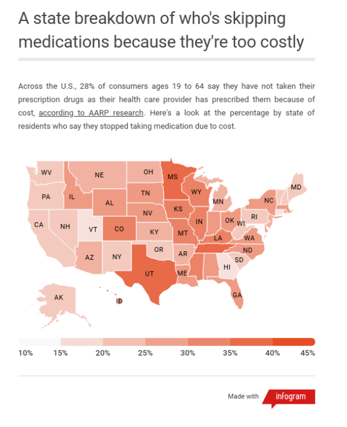
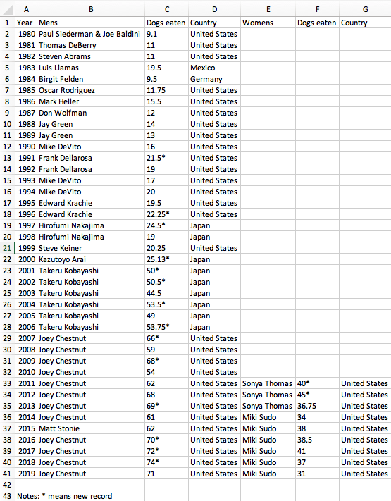
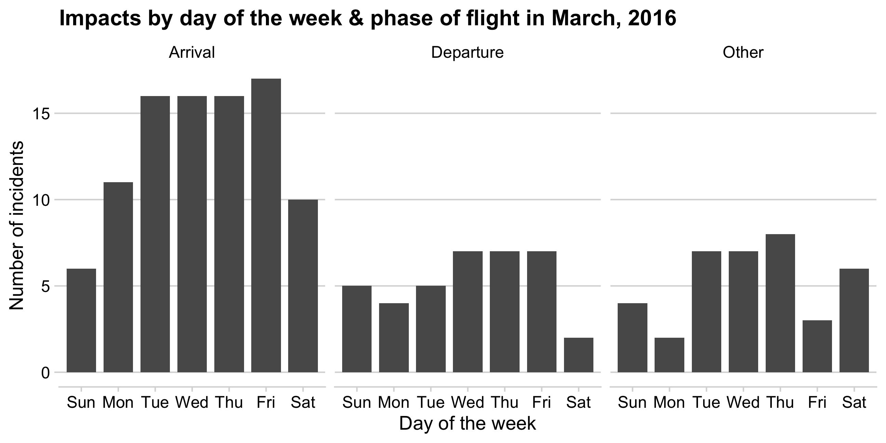
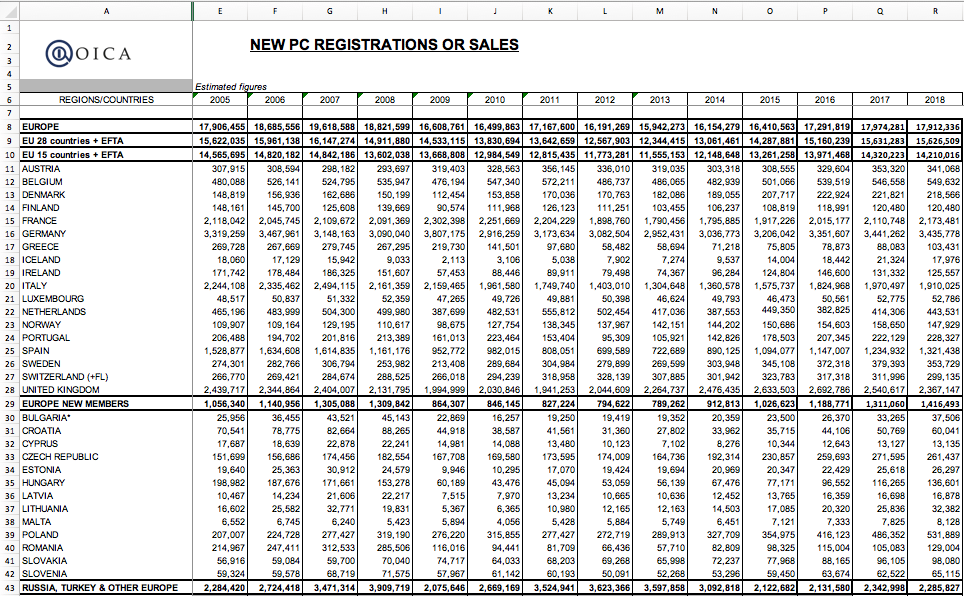

Tip of the week
Copy-paste magic with datapasta
Useful for “small data”: e.g., U.S. State Abbreviations
Today’s data
“Clean” data
“Messy” data
Plus two new packages:
Week 5: Joins & Data Cleaning
1. Merging datasets with joins
2. Are your variables the right type?
3. Are your variables the right name?
4. Re-coding variables
5. Dates
6. Dealing with messy Excel files
Week 5: Joins & Data Cleaning
1. Merging datasets with joins
2. Are your variables the right type?
3. Are your variables the right name?
4. Re-coding variables
5. Dates
6. Dealing with messy Excel files

Likely culprit: Merging two columns
Joins
inner_join()left_join()/right_join()full_join()
. . .
Example: band_members & band_instruments


Specify the joining variable name
Specify the joining variable name
If the names differ, use by = c("left_name" = "joining_name")
#> # A tibble: 3 × 2
#> name band
#> <chr> <chr>
#> 1 Mick Stones
#> 2 John Beatles
#> 3 Paul BeatlesSpecify the joining variable name
Or just rename the joining variable in a pipe
#> # A tibble: 3 × 2
#> name band
#> <chr> <chr>
#> 1 Mick Stones
#> 2 John Beatles
#> 3 Paul BeatlesYour turn
- Create a data frame called
state_databy joining the data framesstates_abbsandmilk_productionand then selecting the variablesregion,state_name,state_abb. Hint: Use thedistinct()function to drop repeated rows.
Your result should look like this:
- Join the
state_datadata frame to thewildlife_impactsdata frame, adding the variablesregionandstate_name
#> Rows: 56,978
#> Columns: 24
#> $ region <chr> "Northeast", "Northeast", "Northeast", "Northeast", "Northeast", "Northeast", "Northeast", "Northeast", "Northeast", "Northeast", "Northeast", "Northeast", "Northeast", "Northeast", "Northeast", "Northeast", "Northeast…
#> $ state_name <chr> "Maine", "Maine", "Maine", "Maine", "Maine", "Maine", "Maine", "Maine", "Maine", "Maine", "Maine", "Maine", "Maine", "Maine", "Maine", "Maine", "Maine", "Maine", "Maine", "Maine", "Maine", "Maine", "Maine", "Maine", "M…
#> $ state_abb <chr> "ME", "ME", "ME", "ME", "ME", "ME", "ME", "ME", "ME", "ME", "ME", "ME", "ME", "ME", "ME", "ME", "ME", "ME", "ME", "ME", "ME", "ME", "ME", "ME", "ME", "ME", "ME", "ME", "ME", "ME", "ME", "ME", "ME", "ME", "ME", "ME", "M…
#> $ incident_date <dttm> 2018-10-23, 2018-10-07, 2018-10-05, 2018-10-05, 2017-07-25, 2016-11-07, 2016-11-07, 2016-10-29, 2016-07-30, 1990-08-01, 2018-11-06, 2018-07-29, 2018-05-05, 2017-04-04, 2016-04-28, 2012-05-20, 2011-10-23, 2003-09-07, 2…
#> $ airport_id <chr> "KPWM", "KPWM", "KPWM", "KPWM", "KPWM", "KPWM", "KPWM", "KPWM", "KPWM", "KPWM", "KPWM", "KPWM", "KPWM", "KPWM", "KPWM", "KPWM", "KPWM", "KPWM", "KPWM", "KPWM", "KPWM", "KBGR", "KPWM", "KBGR", "KPWM", "KPWM", "KPWM", "K…
#> $ airport <chr> "PORTLAND INTL JETPORT (ME)", "PORTLAND INTL JETPORT (ME)", "PORTLAND INTL JETPORT (ME)", "PORTLAND INTL JETPORT (ME)", "PORTLAND INTL JETPORT (ME)", "PORTLAND INTL JETPORT (ME)", "PORTLAND INTL JETPORT (ME)", "PORTLAN…
#> $ operator <chr> "AMERICAN AIRLINES", "AMERICAN AIRLINES", "AMERICAN AIRLINES", "AMERICAN AIRLINES", "AMERICAN AIRLINES", "AMERICAN AIRLINES", "AMERICAN AIRLINES", "AMERICAN AIRLINES", "AMERICAN AIRLINES", "AMERICAN AIRLINES", "DELTA A…
#> $ atype <chr> "A-320", "A-319", "A-319", "EMB-190", "EMB-170", "A-319", "A-319", "A-319", "CRJ100/200", "DHC8 DASH 8", "MD-90-30", "MD-90-30", "MD-90-30", "CRJ700", "MD-88", "MD-88", "MD-88", "MD-88", "MD-88", "MD-80", "MD-88", "MD-…
#> $ type_eng <chr> "D", "D", "D", "D", "D", "D", "D", "D", "D", "C", "D", "D", "D", "D", "D", "D", "D", "D", "D", "D", "D", "D", "D", "D", "D", "D", "D", "D", "D", "D", "D", "D", "D", "D", "D", "D", "D", "D", "D", "D", "D", "D", "D", "D"…
#> $ species_id <chr> "UNKBS", "ZX302", "ZS010", "I1102", "K3310", "YH004", "UNKB", "YL001", "UNKB", "NE1", "R2001", "YM1102", "NE101", "YL001", "UNKB", "NE1", "UNKB", "I1102", "UNKBS", "NE1", "NE101", "ZX202", "ZX3", "ZX202", "NE1", "UNKBS…
#> $ species <chr> "Unknown bird - small", "Swamp sparrow", "Blackpoll warbler", "Great blue heron", "Sharp-shinned hawk", "Horned lark", "Unknown bird", "European starling", "Unknown bird", "Gulls", "Snowy owl", "American crow", "Herrin…
#> $ damage <chr> "N", NA, "N", "M?", "N", "N", "N", "N", "N", "N", NA, "N", "N", NA, "N", NA, "N", NA, NA, "N", "M", "N", "N", "N", "N", "N", "N", "N", "N", "N", NA, "N", "N", "N", "N", "N", "N", "N", "N", "N", "N", "N", "N", "N", "N",…
#> $ num_engs <dbl> 2, 2, 2, 2, 2, 2, 2, 2, 2, 2, 2, 2, 2, 2, 2, 2, 2, 2, 2, 2, 2, 2, 2, 2, 2, 2, 3, 2, 2, 2, 2, 2, 2, 2, 2, 2, 2, 2, 2, 2, 2, 2, 2, 2, 2, 2, 2, 2, 2, 2, 3, 3, 3, 3, 2, 2, 3, 3, 2, 2, 2, 2, 2, 2, 2, 2, 2, 2, 2, 2, 2, 2, 2,…
#> $ incident_month <dbl> 10, 10, 10, 10, 7, 11, 11, 10, 7, 8, 11, 7, 5, 4, 4, 5, 10, 9, 8, 6, 6, 11, 11, 11, 10, 5, 10, 8, 11, 9, 11, 10, 11, 11, 10, 10, 10, 9, 11, 7, 6, 6, 6, 6, 9, 8, 6, 5, 11, 7, 8, 9, 5, 5, 10, 2, 9, 8, 3, 3, 3, 11, 11, 11…
#> $ incident_year <dbl> 2018, 2018, 2018, 2018, 2017, 2016, 2016, 2016, 2016, 1990, 2018, 2018, 2018, 2017, 2016, 2012, 2011, 2003, 2002, 2000, 2000, 1995, 1995, 1995, 1995, 1995, 1994, 1994, 1993, 1993, 1992, 1990, 2018, 2018, 2018, 2018, 20…
#> $ time_of_day <chr> NA, "Night", "Night", "Day", "Dawn", "Day", "Day", "Day", "Day", "Day", "Dawn", "Day", "Day", NA, "Night", "Day", NA, "Night", "Day", "Day", "Day", "Day", "Day", "Dawn", "Day", "Day", "Night", "Day", "Day", "Night", "N…
#> $ time <dbl> 1310, 1035, 2200, 1645, 645, 1345, 1346, 1400, 1100, NA, 610, 1912, 613, 1145, 2041, 700, NA, 2035, NA, NA, NA, NA, NA, NA, NA, NA, NA, NA, NA, NA, NA, NA, 1515, 1545, 1523, 1610, 1025, 2343, 1533, 1115, 1145, 1130, 11…
#> $ height <dbl> 15, NA, 1000, 0, 0, 0, 0, NA, NA, 2000, 0, 50, 0, 0, NA, 0, 0, 0, 0, 200, 0, 0, 10, 0, 0, 0, 2500, 0, 3, 200, 0, 0, 5, 20, 0, 10, 0, 800, 0, 50, 0, 0, NA, 1300, 2000, 30, 0, 1300, 2000, 1500, 500, NA, NA, NA, 0, 0, 0, …
#> $ speed <dbl> 150, NA, 140, 110, NA, NA, NA, NA, NA, 250, 100, NA, 150, NA, NA, NA, NA, 130, 130, 135, NA, 85, 140, 150, NA, 125, 140, NA, 135, 120, 90, NA, 131, 140, NA, 155, NA, NA, NA, 140, NA, 100, NA, 150, 150, 140, NA, 150, 21…
#> $ phase_of_flt <chr> "departure", "arrival", "arrival", "arrival", "arrival", "arrival", "arrival", "arrival", "arrival", "departure", "departure", "departure", "departure", "arrival", "arrival", "departure", "arrival", "arrival", "departu…
#> $ sky <chr> "Overcast", "Some Cloud", "Some Cloud", "Some Cloud", "Some Cloud", "No Cloud", NA, "Overcast", "Overcast", NA, "Overcast", "Some Cloud", "Some Cloud", "Overcast", NA, "No Cloud", NA, "Overcast", "Overcast", "Overcast"…
#> $ precip <chr> "None", "None", "None", "None", "None", "None", NA, "Rain", "None", NA, "Rain", "None", "None", "Rain", NA, "None", NA, NA, "None", "None", "None", "None", "None", "None", "None", "None", "Rain", "None", "None", "None"…
#> $ cost_repairs_infl_adj <dbl> NA, NA, NA, NA, NA, NA, NA, NA, NA, NA, NA, NA, NA, NA, NA, NA, NA, NA, NA, NA, NA, NA, NA, NA, NA, NA, NA, NA, NA, NA, NA, NA, NA, 5400, NA, NA, NA, NA, NA, NA, NA, NA, NA, NA, NA, NA, NA, NA, NA, NA, NA, NA, NA, NA, …
#> $ weekday_name <ord> Tue, Sun, Fri, Fri, Tue, Mon, Mon, Sat, Sat, Wed, Tue, Sun, Sat, Tue, Thu, Sun, Sun, Sun, Fri, Tue, Tue, Tue, Mon, Sat, Tue, Mon, Sat, Tue, Thu, Sat, Tue, Fri, Fri, Sat, Tue, Sat, Wed, Tue, Thu, Thu, Sun, Sun, Sun, Fri…Week 5: Joins & Data Cleaning
1. Merging datasets with joins
2. Are your variables the right type?
3. Are your variables the right name?
4. Re-coding variables
5. Dates
6. Dealing with messy Excel files
Always check variable types after reading in data!
#> Rows: 50
#> Columns: 7
#> $ Ranking <chr> "1.0", "2.0", "3.0", "4.0", "5.0", "6.0", "7.0", "8.0", "9.0", "10.0", "11.0", "12.0", "13.0", "14.0", "15.0", "16.0", "17.0", "18.0", "19.0", "20.0", "21.0", "22.0", "23.0", "24.0", "25.0", "26.0", "27.0", "…
#> $ State <chr> "TEXAS", "OKLAHOMA", "IOWA", "CALIFORNIA", "KANSAS", "ILLINOIS", "MINNESOTA", "OREGON", "COLORADO", "WASHINGTON", "NORTH DAKOTA", "INDIANA", "MICHIGAN", "NEW YORK", "NEW MEXICO", "WYOMING", "NEBRASKA", "PENNS…
#> $ `Installed Capacity (MW)` <dbl> 23262, 7495, 7312, 5686, 5110, 4464, 3699, 3213, 3106, 3075, 2996, 2117, 1904, 1829, 1682, 1489, 1445, 1369, 977, 973, 959, 923, 746, 720, 686, 617, 391, 268, 208, 206, 191, 185, 152, 149, 113, 62, 54, 29, 9,…
#> $ `Equivalent Homes Powered` <chr> "6235000.0", "2268000.0", "1935000.0", "1298000.0", "1719000.0", "1050000.0", "1012000.0", "604600.0", "889100.0", "695300.0", "1021000.0", "440700.0", "471700.0", "366500.0", "422100.0", "408700.0", "486700.…
#> $ `Total Investment ($ Millions)` <chr> "42000.0", "13700.0", "14200.0", "12600.0", "9400.0", "8900.0", "7100.0", "6600.0", "6000.0", "6100.0", "5800.0", "4500.0", "3500.0", "3700.0", "2900.0", "3100.0", "2600.0", "2800.0", "2100.0", "2100.0", "180…
#> $ `Wind Projects Online` <dbl> 136, 45, 107, 104, 35, 49, 98, 31, 25, 20, 28, 16, 26, 27, 17, 22, 22, 24, 14, 15, 8, 18, 18, 16, 6, 37, 5, 5, 1, 7, 6, 5, 1, 9, 44, 19, 15, 2, 2, 2, 1, 0, 1, 0, 0, 0, 0, 0, 0, 0
#> $ `# of Wind Turbines` <chr> "12750.0", "3717.0", "4145.0", "6972.0", "2795.0", "2632.0", "2428.0", "1868.0", "1949.0", "1725.0", "1611.0", "1203.0", "1051.0", "1052.0", "1005.0", "1005.0", "789.0", "726.0", "583.0", "541.0", "499.0", "3…Be careful converting strings to numbers!
Week 5: Joins & Data Cleaning
1. Merging datasets with joins
2. Are your variables the right type?
3. Are your variables the right name?
4. Re-coding variables
5. Dates
6. Dealing with messy Excel files
Renaming made easy
janitor::clean_names()

#> Rows: 50
#> Columns: 7
#> $ Ranking <chr> "1.0", "2.0", "3.0", "4.0", "5.0", "6.0", "7.0", "8.0", "9.0", "10.0", "11.0", "12.0", "13.0", "14.0", "15.0", "16.0", "17.0", "18.0", "19.0", "20.0", "21.0", "22.0", "23.0", "24.0", "25.0", "26.0", "27.0", "…
#> $ State <chr> "TEXAS", "OKLAHOMA", "IOWA", "CALIFORNIA", "KANSAS", "ILLINOIS", "MINNESOTA", "OREGON", "COLORADO", "WASHINGTON", "NORTH DAKOTA", "INDIANA", "MICHIGAN", "NEW YORK", "NEW MEXICO", "WYOMING", "NEBRASKA", "PENNS…
#> $ `Installed Capacity (MW)` <dbl> 23262, 7495, 7312, 5686, 5110, 4464, 3699, 3213, 3106, 3075, 2996, 2117, 1904, 1829, 1682, 1489, 1445, 1369, 977, 973, 959, 923, 746, 720, 686, 617, 391, 268, 208, 206, 191, 185, 152, 149, 113, 62, 54, 29, 9,…
#> $ `Equivalent Homes Powered` <chr> "6235000.0", "2268000.0", "1935000.0", "1298000.0", "1719000.0", "1050000.0", "1012000.0", "604600.0", "889100.0", "695300.0", "1021000.0", "440700.0", "471700.0", "366500.0", "422100.0", "408700.0", "486700.…
#> $ `Total Investment ($ Millions)` <chr> "42000.0", "13700.0", "14200.0", "12600.0", "9400.0", "8900.0", "7100.0", "6600.0", "6000.0", "6100.0", "5800.0", "4500.0", "3500.0", "3700.0", "2900.0", "3100.0", "2600.0", "2800.0", "2100.0", "2100.0", "180…
#> $ `Wind Projects Online` <dbl> 136, 45, 107, 104, 35, 49, 98, 31, 25, 20, 28, 16, 26, 27, 17, 22, 22, 24, 14, 15, 8, 18, 18, 16, 6, 37, 5, 5, 1, 7, 6, 5, 1, 9, 44, 19, 15, 2, 2, 2, 1, 0, 1, 0, 0, 0, 0, 0, 0, 0
#> $ `# of Wind Turbines` <chr> "12750.0", "3717.0", "4145.0", "6972.0", "2795.0", "2632.0", "2428.0", "1868.0", "1949.0", "1725.0", "1611.0", "1203.0", "1051.0", "1052.0", "1005.0", "1005.0", "789.0", "726.0", "583.0", "541.0", "499.0", "3…Renaming made easy
janitor::clean_names()

#> Rows: 50
#> Columns: 7
#> $ ranking <chr> "1.0", "2.0", "3.0", "4.0", "5.0", "6.0", "7.0", "8.0", "9.0", "10.0", "11.0", "12.0", "13.0", "14.0", "15.0", "16.0", "17.0", "18.0", "19.0", "20.0", "21.0", "22.0", "23.0", "24.0", "25.0", "26.0", "27.0", "28.0",…
#> $ state <chr> "TEXAS", "OKLAHOMA", "IOWA", "CALIFORNIA", "KANSAS", "ILLINOIS", "MINNESOTA", "OREGON", "COLORADO", "WASHINGTON", "NORTH DAKOTA", "INDIANA", "MICHIGAN", "NEW YORK", "NEW MEXICO", "WYOMING", "NEBRASKA", "PENNSYLVANI…
#> $ installed_capacity_mw <dbl> 23262, 7495, 7312, 5686, 5110, 4464, 3699, 3213, 3106, 3075, 2996, 2117, 1904, 1829, 1682, 1489, 1445, 1369, 977, 973, 959, 923, 746, 720, 686, 617, 391, 268, 208, 206, 191, 185, 152, 149, 113, 62, 54, 29, 9, 5, 2,…
#> $ equivalent_homes_powered <chr> "6235000.0", "2268000.0", "1935000.0", "1298000.0", "1719000.0", "1050000.0", "1012000.0", "604600.0", "889100.0", "695300.0", "1021000.0", "440700.0", "471700.0", "366500.0", "422100.0", "408700.0", "486700.0", "3…
#> $ total_investment_millions <chr> "42000.0", "13700.0", "14200.0", "12600.0", "9400.0", "8900.0", "7100.0", "6600.0", "6000.0", "6100.0", "5800.0", "4500.0", "3500.0", "3700.0", "2900.0", "3100.0", "2600.0", "2800.0", "2100.0", "2100.0", "1800.0", …
#> $ wind_projects_online <dbl> 136, 45, 107, 104, 35, 49, 98, 31, 25, 20, 28, 16, 26, 27, 17, 22, 22, 24, 14, 15, 8, 18, 18, 16, 6, 37, 5, 5, 1, 7, 6, 5, 1, 9, 44, 19, 15, 2, 2, 2, 1, 0, 1, 0, 0, 0, 0, 0, 0, 0
#> $ number_of_wind_turbines <chr> "12750.0", "3717.0", "4145.0", "6972.0", "2795.0", "2632.0", "2428.0", "1868.0", "1949.0", "1725.0", "1611.0", "1203.0", "1051.0", "1052.0", "1005.0", "1005.0", "789.0", "726.0", "583.0", "541.0", "499.0", "386.0",…Renaming made easy
janitor::clean_names()

#> Rows: 50
#> Columns: 7
#> $ ranking <chr> "1.0", "2.0", "3.0", "4.0", "5.0", "6.0", "7.0", "8.0", "9.0", "10.0", "11.0", "12.0", "13.0", "14.0", "15.0", "16.0", "17.0", "18.0", "19.0", "20.0", "21.0", "22.0", "23.0", "24.0", "25.0", "26.0", "27.0", "28.0", "…
#> $ state <chr> "TEXAS", "OKLAHOMA", "IOWA", "CALIFORNIA", "KANSAS", "ILLINOIS", "MINNESOTA", "OREGON", "COLORADO", "WASHINGTON", "NORTH DAKOTA", "INDIANA", "MICHIGAN", "NEW YORK", "NEW MEXICO", "WYOMING", "NEBRASKA", "PENNSYLVANIA"…
#> $ installedCapacityMw <dbl> 23262, 7495, 7312, 5686, 5110, 4464, 3699, 3213, 3106, 3075, 2996, 2117, 1904, 1829, 1682, 1489, 1445, 1369, 977, 973, 959, 923, 746, 720, 686, 617, 391, 268, 208, 206, 191, 185, 152, 149, 113, 62, 54, 29, 9, 5, 2, 0…
#> $ equivalentHomesPowered <chr> "6235000.0", "2268000.0", "1935000.0", "1298000.0", "1719000.0", "1050000.0", "1012000.0", "604600.0", "889100.0", "695300.0", "1021000.0", "440700.0", "471700.0", "366500.0", "422100.0", "408700.0", "486700.0", "314…
#> $ totalInvestmentMillions <chr> "42000.0", "13700.0", "14200.0", "12600.0", "9400.0", "8900.0", "7100.0", "6600.0", "6000.0", "6100.0", "5800.0", "4500.0", "3500.0", "3700.0", "2900.0", "3100.0", "2600.0", "2800.0", "2100.0", "2100.0", "1800.0", "1…
#> $ windProjectsOnline <dbl> 136, 45, 107, 104, 35, 49, 98, 31, 25, 20, 28, 16, 26, 27, 17, 22, 22, 24, 14, 15, 8, 18, 18, 16, 6, 37, 5, 5, 1, 7, 6, 5, 1, 9, 44, 19, 15, 2, 2, 2, 1, 0, 1, 0, 0, 0, 0, 0, 0, 0
#> $ numberOfWindTurbines <chr> "12750.0", "3717.0", "4145.0", "6972.0", "2795.0", "2632.0", "2428.0", "1868.0", "1949.0", "1725.0", "1611.0", "1203.0", "1051.0", "1052.0", "1005.0", "1005.0", "789.0", "726.0", "583.0", "541.0", "499.0", "386.0", "…Renaming made easy
janitor::clean_names()

#> Rows: 50
#> Columns: 7
#> $ RANKING <chr> "1.0", "2.0", "3.0", "4.0", "5.0", "6.0", "7.0", "8.0", "9.0", "10.0", "11.0", "12.0", "13.0", "14.0", "15.0", "16.0", "17.0", "18.0", "19.0", "20.0", "21.0", "22.0", "23.0", "24.0", "25.0", "26.0", "27.0", "28.0",…
#> $ STATE <chr> "TEXAS", "OKLAHOMA", "IOWA", "CALIFORNIA", "KANSAS", "ILLINOIS", "MINNESOTA", "OREGON", "COLORADO", "WASHINGTON", "NORTH DAKOTA", "INDIANA", "MICHIGAN", "NEW YORK", "NEW MEXICO", "WYOMING", "NEBRASKA", "PENNSYLVANI…
#> $ INSTALLED_CAPACITY_MW <dbl> 23262, 7495, 7312, 5686, 5110, 4464, 3699, 3213, 3106, 3075, 2996, 2117, 1904, 1829, 1682, 1489, 1445, 1369, 977, 973, 959, 923, 746, 720, 686, 617, 391, 268, 208, 206, 191, 185, 152, 149, 113, 62, 54, 29, 9, 5, 2,…
#> $ EQUIVALENT_HOMES_POWERED <chr> "6235000.0", "2268000.0", "1935000.0", "1298000.0", "1719000.0", "1050000.0", "1012000.0", "604600.0", "889100.0", "695300.0", "1021000.0", "440700.0", "471700.0", "366500.0", "422100.0", "408700.0", "486700.0", "3…
#> $ TOTAL_INVESTMENT_MILLIONS <chr> "42000.0", "13700.0", "14200.0", "12600.0", "9400.0", "8900.0", "7100.0", "6600.0", "6000.0", "6100.0", "5800.0", "4500.0", "3500.0", "3700.0", "2900.0", "3100.0", "2600.0", "2800.0", "2100.0", "2100.0", "1800.0", …
#> $ WIND_PROJECTS_ONLINE <dbl> 136, 45, 107, 104, 35, 49, 98, 31, 25, 20, 28, 16, 26, 27, 17, 22, 22, 24, 14, 15, 8, 18, 18, 16, 6, 37, 5, 5, 1, 7, 6, 5, 1, 9, 44, 19, 15, 2, 2, 2, 1, 0, 1, 0, 0, 0, 0, 0, 0, 0
#> $ NUMBER_OF_WIND_TURBINES <chr> "12750.0", "3717.0", "4145.0", "6972.0", "2795.0", "2632.0", "2428.0", "1868.0", "1949.0", "1725.0", "1611.0", "1203.0", "1051.0", "1052.0", "1005.0", "1005.0", "789.0", "726.0", "583.0", "541.0", "499.0", "386.0",…select(): more powerful than you probably thought
. . .
Example: data on sleeping patterns of different mammals
#> Rows: 83
#> Columns: 11
#> $ name <chr> "Cheetah", "Owl monkey", "Mountain beaver", "Greater short-tailed shrew", "Cow", "Three-toed sloth", "Northern fur seal", "Vesper mouse", "Dog", "Roe deer", "Goat", "Guinea pig", "Grivet", "Chinchilla", "Star-nosed mole", "Afri…
#> $ genus <chr> "Acinonyx", "Aotus", "Aplodontia", "Blarina", "Bos", "Bradypus", "Callorhinus", "Calomys", "Canis", "Capreolus", "Capri", "Cavis", "Cercopithecus", "Chinchilla", "Condylura", "Cricetomys", "Cryptotis", "Dasypus", "Dendrohyrax",…
#> $ vore <chr> "carni", "omni", "herbi", "omni", "herbi", "herbi", "carni", NA, "carni", "herbi", "herbi", "herbi", "omni", "herbi", "omni", "omni", "omni", "carni", "herbi", "omni", "herbi", "insecti", "herbi", "herbi", "omni", "omni", "herb…
#> $ order <chr> "Carnivora", "Primates", "Rodentia", "Soricomorpha", "Artiodactyla", "Pilosa", "Carnivora", "Rodentia", "Carnivora", "Artiodactyla", "Artiodactyla", "Rodentia", "Primates", "Rodentia", "Soricomorpha", "Rodentia", "Soricomorpha"…
#> $ conservation <chr> "lc", NA, "nt", "lc", "domesticated", NA, "vu", NA, "domesticated", "lc", "lc", "domesticated", "lc", "domesticated", "lc", NA, "lc", "lc", "lc", "lc", "en", "lc", "domesticated", "domesticated", "lc", "lc", NA, "domesticated",…
#> $ sleep_total <dbl> 12.1, 17.0, 14.4, 14.9, 4.0, 14.4, 8.7, 7.0, 10.1, 3.0, 5.3, 9.4, 10.0, 12.5, 10.3, 8.3, 9.1, 17.4, 5.3, 18.0, 3.9, 19.7, 2.9, 3.1, 10.1, 10.9, 14.9, 12.5, 9.8, 1.9, 2.7, 6.2, 6.3, 8.0, 9.5, 3.3, 19.4, 10.1, 14.2, 14.3, 12.8, 1…
#> $ sleep_rem <dbl> NA, 1.8, 2.4, 2.3, 0.7, 2.2, 1.4, NA, 2.9, NA, 0.6, 0.8, 0.7, 1.5, 2.2, 2.0, 1.4, 3.1, 0.5, 4.9, NA, 3.9, 0.6, 0.4, 3.5, 1.1, NA, 3.2, 1.1, 0.4, 0.1, 1.5, 0.6, 1.9, 0.9, NA, 6.6, 1.2, 1.9, 3.1, NA, 1.4, 2.0, NA, NA, 0.9, NA, 0.…
#> $ sleep_cycle <dbl> NA, NA, NA, 0.1333333, 0.6666667, 0.7666667, 0.3833333, NA, 0.3333333, NA, NA, 0.2166667, NA, 0.1166667, NA, NA, 0.1500000, 0.3833333, NA, 0.3333333, NA, 0.1166667, 1.0000000, NA, 0.2833333, NA, NA, 0.4166667, 0.5500000, NA, NA…
#> $ awake <dbl> 11.90, 7.00, 9.60, 9.10, 20.00, 9.60, 15.30, 17.00, 13.90, 21.00, 18.70, 14.60, 14.00, 11.50, 13.70, 15.70, 14.90, 6.60, 18.70, 6.00, 20.10, 4.30, 21.10, 20.90, 13.90, 13.10, 9.10, 11.50, 14.20, 22.10, 21.35, 17.80, 17.70, 16.0…
#> $ brainwt <dbl> NA, 0.01550, NA, 0.00029, 0.42300, NA, NA, NA, 0.07000, 0.09820, 0.11500, 0.00550, NA, 0.00640, 0.00100, 0.00660, 0.00014, 0.01080, 0.01230, 0.00630, 4.60300, 0.00030, 0.65500, 0.41900, 0.00350, 0.11500, NA, 0.02560, 0.00500, N…
#> $ bodywt <dbl> 50.000, 0.480, 1.350, 0.019, 600.000, 3.850, 20.490, 0.045, 14.000, 14.800, 33.500, 0.728, 4.750, 0.420, 0.060, 1.000, 0.005, 3.500, 2.950, 1.700, 2547.000, 0.023, 521.000, 187.000, 0.770, 10.000, 0.071, 3.300, 0.200, 899.995, …select(): more powerful than you probably thought
Use select() to choose which columns to keep
#> Rows: 83
#> Columns: 7
#> $ name <chr> "Cheetah", "Owl monkey", "Mountain beaver", "Greater short-tailed shrew", "Cow", "Three-toed sloth", "Northern fur seal", "Vesper mouse", "Dog", "Roe deer", "Goat", "Guinea pig", "Grivet", "Chinchilla", "Star-nosed mole", "Afric…
#> $ genus <chr> "Acinonyx", "Aotus", "Aplodontia", "Blarina", "Bos", "Bradypus", "Callorhinus", "Calomys", "Canis", "Capreolus", "Capri", "Cavis", "Cercopithecus", "Chinchilla", "Condylura", "Cricetomys", "Cryptotis", "Dasypus", "Dendrohyrax", …
#> $ vore <chr> "carni", "omni", "herbi", "omni", "herbi", "herbi", "carni", NA, "carni", "herbi", "herbi", "herbi", "omni", "herbi", "omni", "omni", "omni", "carni", "herbi", "omni", "herbi", "insecti", "herbi", "herbi", "omni", "omni", "herbi…
#> $ order <chr> "Carnivora", "Primates", "Rodentia", "Soricomorpha", "Artiodactyla", "Pilosa", "Carnivora", "Rodentia", "Carnivora", "Artiodactyla", "Artiodactyla", "Rodentia", "Primates", "Rodentia", "Soricomorpha", "Rodentia", "Soricomorpha",…
#> $ sleep_total <dbl> 12.1, 17.0, 14.4, 14.9, 4.0, 14.4, 8.7, 7.0, 10.1, 3.0, 5.3, 9.4, 10.0, 12.5, 10.3, 8.3, 9.1, 17.4, 5.3, 18.0, 3.9, 19.7, 2.9, 3.1, 10.1, 10.9, 14.9, 12.5, 9.8, 1.9, 2.7, 6.2, 6.3, 8.0, 9.5, 3.3, 19.4, 10.1, 14.2, 14.3, 12.8, 12…
#> $ sleep_rem <dbl> NA, 1.8, 2.4, 2.3, 0.7, 2.2, 1.4, NA, 2.9, NA, 0.6, 0.8, 0.7, 1.5, 2.2, 2.0, 1.4, 3.1, 0.5, 4.9, NA, 3.9, 0.6, 0.4, 3.5, 1.1, NA, 3.2, 1.1, 0.4, 0.1, 1.5, 0.6, 1.9, 0.9, NA, 6.6, 1.2, 1.9, 3.1, NA, 1.4, 2.0, NA, NA, 0.9, NA, 0.9…
#> $ sleep_cycle <dbl> NA, NA, NA, 0.1333333, 0.6666667, 0.7666667, 0.3833333, NA, 0.3333333, NA, NA, 0.2166667, NA, 0.1166667, NA, NA, 0.1500000, 0.3833333, NA, 0.3333333, NA, 0.1166667, 1.0000000, NA, 0.2833333, NA, NA, 0.4166667, 0.5500000, NA, NA,…Use select() to choose which columns to drop
#> Rows: 83
#> Columns: 7
#> $ conservation <chr> "lc", NA, "nt", "lc", "domesticated", NA, "vu", NA, "domesticated", "lc", "lc", "domesticated", "lc", "domesticated", "lc", NA, "lc", "lc", "lc", "lc", "en", "lc", "domesticated", "domesticated", "lc", "lc", NA, "domesticated",…
#> $ sleep_total <dbl> 12.1, 17.0, 14.4, 14.9, 4.0, 14.4, 8.7, 7.0, 10.1, 3.0, 5.3, 9.4, 10.0, 12.5, 10.3, 8.3, 9.1, 17.4, 5.3, 18.0, 3.9, 19.7, 2.9, 3.1, 10.1, 10.9, 14.9, 12.5, 9.8, 1.9, 2.7, 6.2, 6.3, 8.0, 9.5, 3.3, 19.4, 10.1, 14.2, 14.3, 12.8, 1…
#> $ sleep_rem <dbl> NA, 1.8, 2.4, 2.3, 0.7, 2.2, 1.4, NA, 2.9, NA, 0.6, 0.8, 0.7, 1.5, 2.2, 2.0, 1.4, 3.1, 0.5, 4.9, NA, 3.9, 0.6, 0.4, 3.5, 1.1, NA, 3.2, 1.1, 0.4, 0.1, 1.5, 0.6, 1.9, 0.9, NA, 6.6, 1.2, 1.9, 3.1, NA, 1.4, 2.0, NA, NA, 0.9, NA, 0.…
#> $ sleep_cycle <dbl> NA, NA, NA, 0.1333333, 0.6666667, 0.7666667, 0.3833333, NA, 0.3333333, NA, NA, 0.2166667, NA, 0.1166667, NA, NA, 0.1500000, 0.3833333, NA, 0.3333333, NA, 0.1166667, 1.0000000, NA, 0.2833333, NA, NA, 0.4166667, 0.5500000, NA, NA…
#> $ awake <dbl> 11.90, 7.00, 9.60, 9.10, 20.00, 9.60, 15.30, 17.00, 13.90, 21.00, 18.70, 14.60, 14.00, 11.50, 13.70, 15.70, 14.90, 6.60, 18.70, 6.00, 20.10, 4.30, 21.10, 20.90, 13.90, 13.10, 9.10, 11.50, 14.20, 22.10, 21.35, 17.80, 17.70, 16.0…
#> $ brainwt <dbl> NA, 0.01550, NA, 0.00029, 0.42300, NA, NA, NA, 0.07000, 0.09820, 0.11500, 0.00550, NA, 0.00640, 0.00100, 0.00660, 0.00014, 0.01080, 0.01230, 0.00630, 4.60300, 0.00030, 0.65500, 0.41900, 0.00350, 0.11500, NA, 0.02560, 0.00500, N…
#> $ bodywt <dbl> 50.000, 0.480, 1.350, 0.019, 600.000, 3.850, 20.490, 0.045, 14.000, 14.800, 33.500, 0.728, 4.750, 0.420, 0.060, 1.000, 0.005, 3.500, 2.950, 1.700, 2547.000, 0.023, 521.000, 187.000, 0.770, 10.000, 0.071, 3.300, 0.200, 899.995, …Select columns based on partial column names
. . .
Select columns that start with “sleep”:
#> Rows: 83
#> Columns: 4
#> $ name <chr> "Cheetah", "Owl monkey", "Mountain beaver", "Greater short-tailed shrew", "Cow", "Three-toed sloth", "Northern fur seal", "Vesper mouse", "Dog", "Roe deer", "Goat", "Guinea pig", "Grivet", "Chinchilla", "Star-nosed mole", "Afric…
#> $ sleep_total <dbl> 12.1, 17.0, 14.4, 14.9, 4.0, 14.4, 8.7, 7.0, 10.1, 3.0, 5.3, 9.4, 10.0, 12.5, 10.3, 8.3, 9.1, 17.4, 5.3, 18.0, 3.9, 19.7, 2.9, 3.1, 10.1, 10.9, 14.9, 12.5, 9.8, 1.9, 2.7, 6.2, 6.3, 8.0, 9.5, 3.3, 19.4, 10.1, 14.2, 14.3, 12.8, 12…
#> $ sleep_rem <dbl> NA, 1.8, 2.4, 2.3, 0.7, 2.2, 1.4, NA, 2.9, NA, 0.6, 0.8, 0.7, 1.5, 2.2, 2.0, 1.4, 3.1, 0.5, 4.9, NA, 3.9, 0.6, 0.4, 3.5, 1.1, NA, 3.2, 1.1, 0.4, 0.1, 1.5, 0.6, 1.9, 0.9, NA, 6.6, 1.2, 1.9, 3.1, NA, 1.4, 2.0, NA, NA, 0.9, NA, 0.9…
#> $ sleep_cycle <dbl> NA, NA, NA, 0.1333333, 0.6666667, 0.7666667, 0.3833333, NA, 0.3333333, NA, NA, 0.2166667, NA, 0.1166667, NA, NA, 0.1500000, 0.3833333, NA, 0.3333333, NA, 0.1166667, 1.0000000, NA, 0.2833333, NA, NA, 0.4166667, 0.5500000, NA, NA,…Select columns that contain “eep” and end with “wt”:
#> Rows: 83
#> Columns: 5
#> $ sleep_total <dbl> 12.1, 17.0, 14.4, 14.9, 4.0, 14.4, 8.7, 7.0, 10.1, 3.0, 5.3, 9.4, 10.0, 12.5, 10.3, 8.3, 9.1, 17.4, 5.3, 18.0, 3.9, 19.7, 2.9, 3.1, 10.1, 10.9, 14.9, 12.5, 9.8, 1.9, 2.7, 6.2, 6.3, 8.0, 9.5, 3.3, 19.4, 10.1, 14.2, 14.3, 12.8, 12…
#> $ sleep_rem <dbl> NA, 1.8, 2.4, 2.3, 0.7, 2.2, 1.4, NA, 2.9, NA, 0.6, 0.8, 0.7, 1.5, 2.2, 2.0, 1.4, 3.1, 0.5, 4.9, NA, 3.9, 0.6, 0.4, 3.5, 1.1, NA, 3.2, 1.1, 0.4, 0.1, 1.5, 0.6, 1.9, 0.9, NA, 6.6, 1.2, 1.9, 3.1, NA, 1.4, 2.0, NA, NA, 0.9, NA, 0.9…
#> $ sleep_cycle <dbl> NA, NA, NA, 0.1333333, 0.6666667, 0.7666667, 0.3833333, NA, 0.3333333, NA, NA, 0.2166667, NA, 0.1166667, NA, NA, 0.1500000, 0.3833333, NA, 0.3333333, NA, 0.1166667, 1.0000000, NA, 0.2833333, NA, NA, 0.4166667, 0.5500000, NA, NA,…
#> $ brainwt <dbl> NA, 0.01550, NA, 0.00029, 0.42300, NA, NA, NA, 0.07000, 0.09820, 0.11500, 0.00550, NA, 0.00640, 0.00100, 0.00660, 0.00014, 0.01080, 0.01230, 0.00630, 4.60300, 0.00030, 0.65500, 0.41900, 0.00350, 0.11500, NA, 0.02560, 0.00500, NA…
#> $ bodywt <dbl> 50.000, 0.480, 1.350, 0.019, 600.000, 3.850, 20.490, 0.045, 14.000, 14.800, 33.500, 0.728, 4.750, 0.420, 0.060, 1.000, 0.005, 3.500, 2.950, 1.700, 2547.000, 0.023, 521.000, 187.000, 0.770, 10.000, 0.071, 3.300, 0.200, 899.995, 8…Select columns based on their data type
Select only numeric columns:
#> Rows: 83
#> Columns: 6
#> $ sleep_total <dbl> 12.1, 17.0, 14.4, 14.9, 4.0, 14.4, 8.7, 7.0, 10.1, 3.0, 5.3, 9.4, 10.0, 12.5, 10.3, 8.3, 9.1, 17.4, 5.3, 18.0, 3.9, 19.7, 2.9, 3.1, 10.1, 10.9, 14.9, 12.5, 9.8, 1.9, 2.7, 6.2, 6.3, 8.0, 9.5, 3.3, 19.4, 10.1, 14.2, 14.3, 12.8, 12…
#> $ sleep_rem <dbl> NA, 1.8, 2.4, 2.3, 0.7, 2.2, 1.4, NA, 2.9, NA, 0.6, 0.8, 0.7, 1.5, 2.2, 2.0, 1.4, 3.1, 0.5, 4.9, NA, 3.9, 0.6, 0.4, 3.5, 1.1, NA, 3.2, 1.1, 0.4, 0.1, 1.5, 0.6, 1.9, 0.9, NA, 6.6, 1.2, 1.9, 3.1, NA, 1.4, 2.0, NA, NA, 0.9, NA, 0.9…
#> $ sleep_cycle <dbl> NA, NA, NA, 0.1333333, 0.6666667, 0.7666667, 0.3833333, NA, 0.3333333, NA, NA, 0.2166667, NA, 0.1166667, NA, NA, 0.1500000, 0.3833333, NA, 0.3333333, NA, 0.1166667, 1.0000000, NA, 0.2833333, NA, NA, 0.4166667, 0.5500000, NA, NA,…
#> $ awake <dbl> 11.90, 7.00, 9.60, 9.10, 20.00, 9.60, 15.30, 17.00, 13.90, 21.00, 18.70, 14.60, 14.00, 11.50, 13.70, 15.70, 14.90, 6.60, 18.70, 6.00, 20.10, 4.30, 21.10, 20.90, 13.90, 13.10, 9.10, 11.50, 14.20, 22.10, 21.35, 17.80, 17.70, 16.00…
#> $ brainwt <dbl> NA, 0.01550, NA, 0.00029, 0.42300, NA, NA, NA, 0.07000, 0.09820, 0.11500, 0.00550, NA, 0.00640, 0.00100, 0.00660, 0.00014, 0.01080, 0.01230, 0.00630, 4.60300, 0.00030, 0.65500, 0.41900, 0.00350, 0.11500, NA, 0.02560, 0.00500, NA…
#> $ bodywt <dbl> 50.000, 0.480, 1.350, 0.019, 600.000, 3.850, 20.490, 0.045, 14.000, 14.800, 33.500, 0.728, 4.750, 0.420, 0.060, 1.000, 0.005, 3.500, 2.950, 1.700, 2547.000, 0.023, 521.000, 187.000, 0.770, 10.000, 0.071, 3.300, 0.200, 899.995, 8…Select only character columns:
#> Rows: 83
#> Columns: 5
#> $ name <chr> "Cheetah", "Owl monkey", "Mountain beaver", "Greater short-tailed shrew", "Cow", "Three-toed sloth", "Northern fur seal", "Vesper mouse", "Dog", "Roe deer", "Goat", "Guinea pig", "Grivet", "Chinchilla", "Star-nosed mole", "Afri…
#> $ genus <chr> "Acinonyx", "Aotus", "Aplodontia", "Blarina", "Bos", "Bradypus", "Callorhinus", "Calomys", "Canis", "Capreolus", "Capri", "Cavis", "Cercopithecus", "Chinchilla", "Condylura", "Cricetomys", "Cryptotis", "Dasypus", "Dendrohyrax",…
#> $ vore <chr> "carni", "omni", "herbi", "omni", "herbi", "herbi", "carni", NA, "carni", "herbi", "herbi", "herbi", "omni", "herbi", "omni", "omni", "omni", "carni", "herbi", "omni", "herbi", "insecti", "herbi", "herbi", "omni", "omni", "herb…
#> $ order <chr> "Carnivora", "Primates", "Rodentia", "Soricomorpha", "Artiodactyla", "Pilosa", "Carnivora", "Rodentia", "Carnivora", "Artiodactyla", "Artiodactyla", "Rodentia", "Primates", "Rodentia", "Soricomorpha", "Rodentia", "Soricomorpha"…
#> $ conservation <chr> "lc", NA, "nt", "lc", "domesticated", NA, "vu", NA, "domesticated", "lc", "lc", "domesticated", "lc", "domesticated", "lc", NA, "lc", "lc", "lc", "lc", "en", "lc", "domesticated", "domesticated", "lc", "lc", NA, "domesticated",…Use select() to reorder variables
. . .
#> Rows: 83
#> Columns: 11
#> $ name <chr> "Cheetah", "Owl monkey", "Mountain beaver", "Greater short-tailed shrew", "Cow", "Three-toed sloth", "Northern fur seal", "Vesper mouse", "Dog", "Roe deer", "Goat", "Guinea pig", "Grivet", "Chinchilla", "Star-nosed mole", "Afri…
#> $ genus <chr> "Acinonyx", "Aotus", "Aplodontia", "Blarina", "Bos", "Bradypus", "Callorhinus", "Calomys", "Canis", "Capreolus", "Capri", "Cavis", "Cercopithecus", "Chinchilla", "Condylura", "Cricetomys", "Cryptotis", "Dasypus", "Dendrohyrax",…
#> $ vore <chr> "carni", "omni", "herbi", "omni", "herbi", "herbi", "carni", NA, "carni", "herbi", "herbi", "herbi", "omni", "herbi", "omni", "omni", "omni", "carni", "herbi", "omni", "herbi", "insecti", "herbi", "herbi", "omni", "omni", "herb…
#> $ order <chr> "Carnivora", "Primates", "Rodentia", "Soricomorpha", "Artiodactyla", "Pilosa", "Carnivora", "Rodentia", "Carnivora", "Artiodactyla", "Artiodactyla", "Rodentia", "Primates", "Rodentia", "Soricomorpha", "Rodentia", "Soricomorpha"…
#> $ conservation <chr> "lc", NA, "nt", "lc", "domesticated", NA, "vu", NA, "domesticated", "lc", "lc", "domesticated", "lc", "domesticated", "lc", NA, "lc", "lc", "lc", "lc", "en", "lc", "domesticated", "domesticated", "lc", "lc", NA, "domesticated",…
#> $ sleep_total <dbl> 12.1, 17.0, 14.4, 14.9, 4.0, 14.4, 8.7, 7.0, 10.1, 3.0, 5.3, 9.4, 10.0, 12.5, 10.3, 8.3, 9.1, 17.4, 5.3, 18.0, 3.9, 19.7, 2.9, 3.1, 10.1, 10.9, 14.9, 12.5, 9.8, 1.9, 2.7, 6.2, 6.3, 8.0, 9.5, 3.3, 19.4, 10.1, 14.2, 14.3, 12.8, 1…
#> $ sleep_rem <dbl> NA, 1.8, 2.4, 2.3, 0.7, 2.2, 1.4, NA, 2.9, NA, 0.6, 0.8, 0.7, 1.5, 2.2, 2.0, 1.4, 3.1, 0.5, 4.9, NA, 3.9, 0.6, 0.4, 3.5, 1.1, NA, 3.2, 1.1, 0.4, 0.1, 1.5, 0.6, 1.9, 0.9, NA, 6.6, 1.2, 1.9, 3.1, NA, 1.4, 2.0, NA, NA, 0.9, NA, 0.…
#> $ sleep_cycle <dbl> NA, NA, NA, 0.1333333, 0.6666667, 0.7666667, 0.3833333, NA, 0.3333333, NA, NA, 0.2166667, NA, 0.1166667, NA, NA, 0.1500000, 0.3833333, NA, 0.3333333, NA, 0.1166667, 1.0000000, NA, 0.2833333, NA, NA, 0.4166667, 0.5500000, NA, NA…
#> $ awake <dbl> 11.90, 7.00, 9.60, 9.10, 20.00, 9.60, 15.30, 17.00, 13.90, 21.00, 18.70, 14.60, 14.00, 11.50, 13.70, 15.70, 14.90, 6.60, 18.70, 6.00, 20.10, 4.30, 21.10, 20.90, 13.90, 13.10, 9.10, 11.50, 14.20, 22.10, 21.35, 17.80, 17.70, 16.0…
#> $ brainwt <dbl> NA, 0.01550, NA, 0.00029, 0.42300, NA, NA, NA, 0.07000, 0.09820, 0.11500, 0.00550, NA, 0.00640, 0.00100, 0.00660, 0.00014, 0.01080, 0.01230, 0.00630, 4.60300, 0.00030, 0.65500, 0.41900, 0.00350, 0.11500, NA, 0.02560, 0.00500, N…
#> $ bodywt <dbl> 50.000, 0.480, 1.350, 0.019, 600.000, 3.850, 20.490, 0.045, 14.000, 14.800, 33.500, 0.728, 4.750, 0.420, 0.060, 1.000, 0.005, 3.500, 2.950, 1.700, 2547.000, 0.023, 521.000, 187.000, 0.770, 10.000, 0.071, 3.300, 0.200, 899.995, …#> Rows: 83
#> Columns: 11
#> $ conservation <chr> "lc", NA, "nt", "lc", "domesticated", NA, "vu", NA, "domesticated", "lc", "lc", "domesticated", "lc", "domesticated", "lc", NA, "lc", "lc", "lc", "lc", "en", "lc", "domesticated", "domesticated", "lc", "lc", NA, "domesticated",…
#> $ awake <dbl> 11.90, 7.00, 9.60, 9.10, 20.00, 9.60, 15.30, 17.00, 13.90, 21.00, 18.70, 14.60, 14.00, 11.50, 13.70, 15.70, 14.90, 6.60, 18.70, 6.00, 20.10, 4.30, 21.10, 20.90, 13.90, 13.10, 9.10, 11.50, 14.20, 22.10, 21.35, 17.80, 17.70, 16.0…
#> $ name <chr> "Cheetah", "Owl monkey", "Mountain beaver", "Greater short-tailed shrew", "Cow", "Three-toed sloth", "Northern fur seal", "Vesper mouse", "Dog", "Roe deer", "Goat", "Guinea pig", "Grivet", "Chinchilla", "Star-nosed mole", "Afri…
#> $ genus <chr> "Acinonyx", "Aotus", "Aplodontia", "Blarina", "Bos", "Bradypus", "Callorhinus", "Calomys", "Canis", "Capreolus", "Capri", "Cavis", "Cercopithecus", "Chinchilla", "Condylura", "Cricetomys", "Cryptotis", "Dasypus", "Dendrohyrax",…
#> $ vore <chr> "carni", "omni", "herbi", "omni", "herbi", "herbi", "carni", NA, "carni", "herbi", "herbi", "herbi", "omni", "herbi", "omni", "omni", "omni", "carni", "herbi", "omni", "herbi", "insecti", "herbi", "herbi", "omni", "omni", "herb…
#> $ order <chr> "Carnivora", "Primates", "Rodentia", "Soricomorpha", "Artiodactyla", "Pilosa", "Carnivora", "Rodentia", "Carnivora", "Artiodactyla", "Artiodactyla", "Rodentia", "Primates", "Rodentia", "Soricomorpha", "Rodentia", "Soricomorpha"…
#> $ sleep_total <dbl> 12.1, 17.0, 14.4, 14.9, 4.0, 14.4, 8.7, 7.0, 10.1, 3.0, 5.3, 9.4, 10.0, 12.5, 10.3, 8.3, 9.1, 17.4, 5.3, 18.0, 3.9, 19.7, 2.9, 3.1, 10.1, 10.9, 14.9, 12.5, 9.8, 1.9, 2.7, 6.2, 6.3, 8.0, 9.5, 3.3, 19.4, 10.1, 14.2, 14.3, 12.8, 1…
#> $ sleep_rem <dbl> NA, 1.8, 2.4, 2.3, 0.7, 2.2, 1.4, NA, 2.9, NA, 0.6, 0.8, 0.7, 1.5, 2.2, 2.0, 1.4, 3.1, 0.5, 4.9, NA, 3.9, 0.6, 0.4, 3.5, 1.1, NA, 3.2, 1.1, 0.4, 0.1, 1.5, 0.6, 1.9, 0.9, NA, 6.6, 1.2, 1.9, 3.1, NA, 1.4, 2.0, NA, NA, 0.9, NA, 0.…
#> $ sleep_cycle <dbl> NA, NA, NA, 0.1333333, 0.6666667, 0.7666667, 0.3833333, NA, 0.3333333, NA, NA, 0.2166667, NA, 0.1166667, NA, NA, 0.1500000, 0.3833333, NA, 0.3333333, NA, 0.1166667, 1.0000000, NA, 0.2833333, NA, NA, 0.4166667, 0.5500000, NA, NA…
#> $ brainwt <dbl> NA, 0.01550, NA, 0.00029, 0.42300, NA, NA, NA, 0.07000, 0.09820, 0.11500, 0.00550, NA, 0.00640, 0.00100, 0.00660, 0.00014, 0.01080, 0.01230, 0.00630, 4.60300, 0.00030, 0.65500, 0.41900, 0.00350, 0.11500, NA, 0.02560, 0.00500, N…
#> $ bodywt <dbl> 50.000, 0.480, 1.350, 0.019, 600.000, 3.850, 20.490, 0.045, 14.000, 14.800, 33.500, 0.728, 4.750, 0.420, 0.060, 1.000, 0.005, 3.500, 2.950, 1.700, 2547.000, 0.023, 521.000, 187.000, 0.770, 10.000, 0.071, 3.300, 0.200, 899.995, …Use select() to rename variables
. . .
Use rename() to just change the name
#> Rows: 83
#> Columns: 11
#> $ animal <chr> "Cheetah", "Owl monkey", "Mountain beaver", "Greater short-tailed shrew", "Cow", "Three-toed sloth", "Northern fur seal", "Vesper mouse", "Dog", "Roe deer", "Goat", "Guinea pig", "Grivet", "Chinchilla", "Star-nosed mole", …
#> $ genus <chr> "Acinonyx", "Aotus", "Aplodontia", "Blarina", "Bos", "Bradypus", "Callorhinus", "Calomys", "Canis", "Capreolus", "Capri", "Cavis", "Cercopithecus", "Chinchilla", "Condylura", "Cricetomys", "Cryptotis", "Dasypus", "Dendrohy…
#> $ vore <chr> "carni", "omni", "herbi", "omni", "herbi", "herbi", "carni", NA, "carni", "herbi", "herbi", "herbi", "omni", "herbi", "omni", "omni", "omni", "carni", "herbi", "omni", "herbi", "insecti", "herbi", "herbi", "omni", "omni", …
#> $ order <chr> "Carnivora", "Primates", "Rodentia", "Soricomorpha", "Artiodactyla", "Pilosa", "Carnivora", "Rodentia", "Carnivora", "Artiodactyla", "Artiodactyla", "Rodentia", "Primates", "Rodentia", "Soricomorpha", "Rodentia", "Soricomo…
#> $ extinction_threat <chr> "lc", NA, "nt", "lc", "domesticated", NA, "vu", NA, "domesticated", "lc", "lc", "domesticated", "lc", "domesticated", "lc", NA, "lc", "lc", "lc", "lc", "en", "lc", "domesticated", "domesticated", "lc", "lc", NA, "domestica…
#> $ sleep_total <dbl> 12.1, 17.0, 14.4, 14.9, 4.0, 14.4, 8.7, 7.0, 10.1, 3.0, 5.3, 9.4, 10.0, 12.5, 10.3, 8.3, 9.1, 17.4, 5.3, 18.0, 3.9, 19.7, 2.9, 3.1, 10.1, 10.9, 14.9, 12.5, 9.8, 1.9, 2.7, 6.2, 6.3, 8.0, 9.5, 3.3, 19.4, 10.1, 14.2, 14.3, 12…
#> $ sleep_rem <dbl> NA, 1.8, 2.4, 2.3, 0.7, 2.2, 1.4, NA, 2.9, NA, 0.6, 0.8, 0.7, 1.5, 2.2, 2.0, 1.4, 3.1, 0.5, 4.9, NA, 3.9, 0.6, 0.4, 3.5, 1.1, NA, 3.2, 1.1, 0.4, 0.1, 1.5, 0.6, 1.9, 0.9, NA, 6.6, 1.2, 1.9, 3.1, NA, 1.4, 2.0, NA, NA, 0.9, N…
#> $ sleep_cycle <dbl> NA, NA, NA, 0.1333333, 0.6666667, 0.7666667, 0.3833333, NA, 0.3333333, NA, NA, 0.2166667, NA, 0.1166667, NA, NA, 0.1500000, 0.3833333, NA, 0.3333333, NA, 0.1166667, 1.0000000, NA, 0.2833333, NA, NA, 0.4166667, 0.5500000, N…
#> $ awake <dbl> 11.90, 7.00, 9.60, 9.10, 20.00, 9.60, 15.30, 17.00, 13.90, 21.00, 18.70, 14.60, 14.00, 11.50, 13.70, 15.70, 14.90, 6.60, 18.70, 6.00, 20.10, 4.30, 21.10, 20.90, 13.90, 13.10, 9.10, 11.50, 14.20, 22.10, 21.35, 17.80, 17.70,…
#> $ brainwt <dbl> NA, 0.01550, NA, 0.00029, 0.42300, NA, NA, NA, 0.07000, 0.09820, 0.11500, 0.00550, NA, 0.00640, 0.00100, 0.00660, 0.00014, 0.01080, 0.01230, 0.00630, 4.60300, 0.00030, 0.65500, 0.41900, 0.00350, 0.11500, NA, 0.02560, 0.005…
#> $ bodywt <dbl> 50.000, 0.480, 1.350, 0.019, 600.000, 3.850, 20.490, 0.045, 14.000, 14.800, 33.500, 0.728, 4.750, 0.420, 0.060, 1.000, 0.005, 3.500, 2.950, 1.700, 2547.000, 0.023, 521.000, 187.000, 0.770, 10.000, 0.071, 3.300, 0.200, 899.…Use select() to change the name and drop everything else
#> Rows: 83
#> Columns: 2
#> $ animal <chr> "Cheetah", "Owl monkey", "Mountain beaver", "Greater short-tailed shrew", "Cow", "Three-toed sloth", "Northern fur seal", "Vesper mouse", "Dog", "Roe deer", "Goat", "Guinea pig", "Grivet", "Chinchilla", "Star-nosed mole", …
#> $ extinction_threat <chr> "lc", NA, "nt", "lc", "domesticated", NA, "vu", NA, "domesticated", "lc", "lc", "domesticated", "lc", "domesticated", "lc", NA, "lc", "lc", "lc", "lc", "en", "lc", "domesticated", "domesticated", "lc", "lc", NA, "domestica…Use select() to rename variables
Use rename() to just change the name
#> Rows: 83
#> Columns: 11
#> $ animal <chr> "Cheetah", "Owl monkey", "Mountain beaver", "Greater short-tailed shrew", "Cow", "Three-toed sloth", "Northern fur seal", "Vesper mouse", "Dog", "Roe deer", "Goat", "Guinea pig", "Grivet", "Chinchilla", "Star-nosed mole", …
#> $ genus <chr> "Acinonyx", "Aotus", "Aplodontia", "Blarina", "Bos", "Bradypus", "Callorhinus", "Calomys", "Canis", "Capreolus", "Capri", "Cavis", "Cercopithecus", "Chinchilla", "Condylura", "Cricetomys", "Cryptotis", "Dasypus", "Dendrohy…
#> $ vore <chr> "carni", "omni", "herbi", "omni", "herbi", "herbi", "carni", NA, "carni", "herbi", "herbi", "herbi", "omni", "herbi", "omni", "omni", "omni", "carni", "herbi", "omni", "herbi", "insecti", "herbi", "herbi", "omni", "omni", …
#> $ order <chr> "Carnivora", "Primates", "Rodentia", "Soricomorpha", "Artiodactyla", "Pilosa", "Carnivora", "Rodentia", "Carnivora", "Artiodactyla", "Artiodactyla", "Rodentia", "Primates", "Rodentia", "Soricomorpha", "Rodentia", "Soricomo…
#> $ extinction_threat <chr> "lc", NA, "nt", "lc", "domesticated", NA, "vu", NA, "domesticated", "lc", "lc", "domesticated", "lc", "domesticated", "lc", NA, "lc", "lc", "lc", "lc", "en", "lc", "domesticated", "domesticated", "lc", "lc", NA, "domestica…
#> $ sleep_total <dbl> 12.1, 17.0, 14.4, 14.9, 4.0, 14.4, 8.7, 7.0, 10.1, 3.0, 5.3, 9.4, 10.0, 12.5, 10.3, 8.3, 9.1, 17.4, 5.3, 18.0, 3.9, 19.7, 2.9, 3.1, 10.1, 10.9, 14.9, 12.5, 9.8, 1.9, 2.7, 6.2, 6.3, 8.0, 9.5, 3.3, 19.4, 10.1, 14.2, 14.3, 12…
#> $ sleep_rem <dbl> NA, 1.8, 2.4, 2.3, 0.7, 2.2, 1.4, NA, 2.9, NA, 0.6, 0.8, 0.7, 1.5, 2.2, 2.0, 1.4, 3.1, 0.5, 4.9, NA, 3.9, 0.6, 0.4, 3.5, 1.1, NA, 3.2, 1.1, 0.4, 0.1, 1.5, 0.6, 1.9, 0.9, NA, 6.6, 1.2, 1.9, 3.1, NA, 1.4, 2.0, NA, NA, 0.9, N…
#> $ sleep_cycle <dbl> NA, NA, NA, 0.1333333, 0.6666667, 0.7666667, 0.3833333, NA, 0.3333333, NA, NA, 0.2166667, NA, 0.1166667, NA, NA, 0.1500000, 0.3833333, NA, 0.3333333, NA, 0.1166667, 1.0000000, NA, 0.2833333, NA, NA, 0.4166667, 0.5500000, N…
#> $ awake <dbl> 11.90, 7.00, 9.60, 9.10, 20.00, 9.60, 15.30, 17.00, 13.90, 21.00, 18.70, 14.60, 14.00, 11.50, 13.70, 15.70, 14.90, 6.60, 18.70, 6.00, 20.10, 4.30, 21.10, 20.90, 13.90, 13.10, 9.10, 11.50, 14.20, 22.10, 21.35, 17.80, 17.70,…
#> $ brainwt <dbl> NA, 0.01550, NA, 0.00029, 0.42300, NA, NA, NA, 0.07000, 0.09820, 0.11500, 0.00550, NA, 0.00640, 0.00100, 0.00660, 0.00014, 0.01080, 0.01230, 0.00630, 4.60300, 0.00030, 0.65500, 0.41900, 0.00350, 0.11500, NA, 0.02560, 0.005…
#> $ bodywt <dbl> 50.000, 0.480, 1.350, 0.019, 600.000, 3.850, 20.490, 0.045, 14.000, 14.800, 33.500, 0.728, 4.750, 0.420, 0.060, 1.000, 0.005, 3.500, 2.950, 1.700, 2547.000, 0.023, 521.000, 187.000, 0.770, 10.000, 0.071, 3.300, 0.200, 899.…Use select() + everything() to change names and keep everything else
#> Rows: 83
#> Columns: 11
#> $ animal <chr> "Cheetah", "Owl monkey", "Mountain beaver", "Greater short-tailed shrew", "Cow", "Three-toed sloth", "Northern fur seal", "Vesper mouse", "Dog", "Roe deer", "Goat", "Guinea pig", "Grivet", "Chinchilla", "Star-nosed mole", …
#> $ extinction_threat <chr> "lc", NA, "nt", "lc", "domesticated", NA, "vu", NA, "domesticated", "lc", "lc", "domesticated", "lc", "domesticated", "lc", NA, "lc", "lc", "lc", "lc", "en", "lc", "domesticated", "domesticated", "lc", "lc", NA, "domestica…
#> $ genus <chr> "Acinonyx", "Aotus", "Aplodontia", "Blarina", "Bos", "Bradypus", "Callorhinus", "Calomys", "Canis", "Capreolus", "Capri", "Cavis", "Cercopithecus", "Chinchilla", "Condylura", "Cricetomys", "Cryptotis", "Dasypus", "Dendrohy…
#> $ vore <chr> "carni", "omni", "herbi", "omni", "herbi", "herbi", "carni", NA, "carni", "herbi", "herbi", "herbi", "omni", "herbi", "omni", "omni", "omni", "carni", "herbi", "omni", "herbi", "insecti", "herbi", "herbi", "omni", "omni", …
#> $ order <chr> "Carnivora", "Primates", "Rodentia", "Soricomorpha", "Artiodactyla", "Pilosa", "Carnivora", "Rodentia", "Carnivora", "Artiodactyla", "Artiodactyla", "Rodentia", "Primates", "Rodentia", "Soricomorpha", "Rodentia", "Soricomo…
#> $ sleep_total <dbl> 12.1, 17.0, 14.4, 14.9, 4.0, 14.4, 8.7, 7.0, 10.1, 3.0, 5.3, 9.4, 10.0, 12.5, 10.3, 8.3, 9.1, 17.4, 5.3, 18.0, 3.9, 19.7, 2.9, 3.1, 10.1, 10.9, 14.9, 12.5, 9.8, 1.9, 2.7, 6.2, 6.3, 8.0, 9.5, 3.3, 19.4, 10.1, 14.2, 14.3, 12…
#> $ sleep_rem <dbl> NA, 1.8, 2.4, 2.3, 0.7, 2.2, 1.4, NA, 2.9, NA, 0.6, 0.8, 0.7, 1.5, 2.2, 2.0, 1.4, 3.1, 0.5, 4.9, NA, 3.9, 0.6, 0.4, 3.5, 1.1, NA, 3.2, 1.1, 0.4, 0.1, 1.5, 0.6, 1.9, 0.9, NA, 6.6, 1.2, 1.9, 3.1, NA, 1.4, 2.0, NA, NA, 0.9, N…
#> $ sleep_cycle <dbl> NA, NA, NA, 0.1333333, 0.6666667, 0.7666667, 0.3833333, NA, 0.3333333, NA, NA, 0.2166667, NA, 0.1166667, NA, NA, 0.1500000, 0.3833333, NA, 0.3333333, NA, 0.1166667, 1.0000000, NA, 0.2833333, NA, NA, 0.4166667, 0.5500000, N…
#> $ awake <dbl> 11.90, 7.00, 9.60, 9.10, 20.00, 9.60, 15.30, 17.00, 13.90, 21.00, 18.70, 14.60, 14.00, 11.50, 13.70, 15.70, 14.90, 6.60, 18.70, 6.00, 20.10, 4.30, 21.10, 20.90, 13.90, 13.10, 9.10, 11.50, 14.20, 22.10, 21.35, 17.80, 17.70,…
#> $ brainwt <dbl> NA, 0.01550, NA, 0.00029, 0.42300, NA, NA, NA, 0.07000, 0.09820, 0.11500, 0.00550, NA, 0.00640, 0.00100, 0.00660, 0.00014, 0.01080, 0.01230, 0.00630, 4.60300, 0.00030, 0.65500, 0.41900, 0.00350, 0.11500, NA, 0.02560, 0.005…
#> $ bodywt <dbl> 50.000, 0.480, 1.350, 0.019, 600.000, 3.850, 20.490, 0.045, 14.000, 14.800, 33.500, 0.728, 4.750, 0.420, 0.060, 1.000, 0.005, 3.500, 2.950, 1.700, 2547.000, 0.023, 521.000, 187.000, 0.770, 10.000, 0.071, 3.300, 0.200, 899.…Read in the hot_dog_winners.xlsx file and adjust the variable names and types to the following:
#> Rows: 42
#> Columns: 7
#> $ year <dbl> 1980, 1981, 1982, 1983, 1984, 1985, 1986, 1987, 1988, 1989, 1990, 1991, 1992, 1993, 1994, 1995, 1996, 1997, 1998, 1999, 2000, 2001, 2002, 2003, 2004, 2005, 2006, 2007, 2008, 2009, 2010, 2011, 2012, 2013, 2014, 2015, 2016, …
#> $ competitor.mens <chr> "Paul Siederman & Joe Baldini", "Thomas DeBerry", "Steven Abrams", "Luis Llamas", "Birgit Felden", "Oscar Rodriguez", "Mark Heller", "Don Wolfman", "Jay Green", "Jay Green", "Mike DeVito", "Frank Dellarosa", "Frank Dellaro…
#> $ competitor.womens <chr> NA, NA, NA, NA, NA, NA, NA, NA, NA, NA, NA, NA, NA, NA, NA, NA, NA, NA, NA, NA, NA, NA, NA, NA, NA, NA, NA, NA, NA, NA, NA, "Sonya Thomas", "Sonya Thomas", "Sonya Thomas", "Miki Sudo", "Miki Sudo", "Miki Sudo", "Miki Sudo"…
#> $ dogs_eaten.mens <dbl> 9.10, 11.00, 11.00, 19.50, 9.50, 11.75, 15.50, 12.00, 14.00, 13.00, 16.00, NA, 19.00, 17.00, 20.00, 19.50, NA, NA, 19.00, 20.25, NA, NA, NA, 44.50, NA, 49.00, NA, NA, 59.00, NA, 54.00, 62.00, 68.00, NA, 61.00, 62.00, NA, N…
#> $ dogs_eaten.womens <dbl> NA, NA, NA, NA, NA, NA, NA, NA, NA, NA, NA, NA, NA, NA, NA, NA, NA, NA, NA, NA, NA, NA, NA, NA, NA, NA, NA, NA, NA, NA, NA, NA, NA, 36.75, 34.00, 38.00, 38.50, 41.00, 37.00, 31.00, NA, NA
#> $ country.mens <chr> "United States", "United States", "United States", "Mexico", "Germany", "United States", "United States", "United States", "United States", "United States", "United States", "United States", "United States", "United States…
#> $ country.womens <chr> NA, NA, NA, NA, NA, NA, NA, NA, NA, NA, NA, NA, NA, NA, NA, NA, NA, NA, NA, NA, NA, NA, NA, NA, NA, NA, NA, NA, NA, NA, NA, "United States", "United States", "United States", "United States", "United States", "United State…
Break
Week 5: Joins & Data Cleaning
1. Merging datasets with joins
2. Are your variables the right type?
3. Are your variables the right name?
4. Re-coding variables
5. Dates
6. Dealing with messy Excel files
Recoding with ifelse()
Example: Create a variable, cost_high, that is TRUE if the repair costs were greater than the median costs and FALSE otherwise.
#> # A tibble: 6 × 3
#> cost cost_median cost_high
#> <dbl> <dbl> <lgl>
#> 1 1000 26783 FALSE
#> 2 200 26783 FALSE
#> 3 10000 26783 FALSE
#> 4 100000 26783 TRUE
#> 5 20000 26783 FALSE
#> 6 487000 26783 TRUERecoding with nested ifelse()
Create a variable, season, based on the incident_month variable.
#> # A tibble: 6 × 2
#> incident_month season
#> <dbl> <chr>
#> 1 12 winter
#> 2 11 fall
#> 3 10 fall
#> 4 9 fall
#> 5 8 summer
#> 6 7 summerRecoding with case_when()
Create a variable, season, based on the incident_month variable.
Note: If you don’t include the final TRUE ~ 'winter' condition, you’ll get NA for those cases.
#> # A tibble: 6 × 2
#> incident_month season
#> <dbl> <chr>
#> 1 12 winter
#> 2 11 fall
#> 3 10 fall
#> 4 9 fall
#> 5 8 summer
#> 6 7 summerRecoding with case_when() with between()
Create a variable, season, based on the incident_month variable.
#> # A tibble: 6 × 2
#> incident_month season
#> <dbl> <chr>
#> 1 12 winter
#> 2 11 fall
#> 3 10 fall
#> 4 9 fall
#> 5 8 summer
#> 6 7 summercase_when() is “cleaner” than ifelse()
. . .
Convert the num_engs variable into a word of the number.
ifelse()
Break a single variable into two with separate()
#> # A tibble: 6 × 4
#> country year cases population
#> <chr> <dbl> <chr> <chr>
#> 1 Afghanistan 1999 745 19987071
#> 2 Afghanistan 2000 2666 20595360
#> 3 Brazil 1999 37737 172006362
#> 4 Brazil 2000 80488 174504898
#> 5 China 1999 212258 1272915272
#> 6 China 2000 213766 1280428583Break a single variable into two with separate()
#> # A tibble: 6 × 4
#> country year cases population
#> <chr> <dbl> <chr> <chr>
#> 1 Afghanistan 1999 745 19987071
#> 2 Afghanistan 2000 2666 20595360
#> 3 Brazil 1999 37737 172006362
#> 4 Brazil 2000 80488 174504898
#> 5 China 1999 212258 1272915272
#> 6 China 2000 213766 1280428583Break a single variable into two with separate()
#> # A tibble: 6 × 4
#> country year cases population
#> <chr> <dbl> <int> <int>
#> 1 Afghanistan 1999 745 19987071
#> 2 Afghanistan 2000 2666 20595360
#> 3 Brazil 1999 37737 172006362
#> 4 Brazil 2000 80488 174504898
#> 5 China 1999 212258 1272915272
#> 6 China 2000 213766 1280428583You can also break up a variable by an index
#> # A tibble: 6 × 4
#> country century year rate
#> <chr> <chr> <chr> <chr>
#> 1 Afghanistan 19 99 745/19987071
#> 2 Afghanistan 20 00 2666/20595360
#> 3 Brazil 19 99 37737/172006362
#> 4 Brazil 20 00 80488/174504898
#> 5 China 19 99 212258/1272915272
#> 6 China 20 00 213766/1280428583unite(): The opposite of separate()
#> # A tibble: 6 × 3
#> country year_new rate
#> <chr> <chr> <chr>
#> 1 Afghanistan 19_99 745/19987071
#> 2 Afghanistan 20_00 2666/20595360
#> 3 Brazil 19_99 37737/172006362
#> 4 Brazil 20_00 80488/174504898
#> 5 China 19_99 212258/1272915272
#> 6 China 20_00 213766/1280428583unite(): The opposite of separate()
#> # A tibble: 6 × 3
#> country year_new rate
#> <chr> <chr> <chr>
#> 1 Afghanistan 1999 745/19987071
#> 2 Afghanistan 2000 2666/20595360
#> 3 Brazil 1999 37737/172006362
#> 4 Brazil 2000 80488/174504898
#> 5 China 1999 212258/1272915272
#> 6 China 2000 213766/1280428583Week 5: Joins & Data Cleaning
1. Merging datasets with joins
2. Are your variables the right type?
3. Are your variables the right name?
4. Re-coding variables
5. Dates
6. Dealing with messy Excel files
Create dates from strings - order is the ONLY thing that matters!
. . .
Create dates from strings - order is the ONLY thing that matters!
Create dates from strings - order is the ONLY thing that matters!
Year-Month-Day
Month-Day-Year
Check out the lubridate cheat sheet
Extracting information from dates
. . .
Extracting information from dates
Quick practice
On what day of the week were you born?
Modifying date elements
. . .
. . .
. . .
Quick practice
What do you think will happen if we do this?
. . .
- Use
case_when()to modify thephase_of_fltvariable in thewildlife_impactsdata:
- The values
'approach','arrival','descent', and'landing roll'should be merged into a single value called'arrival'. - The values
'climb','departure', and'take-off run'should be merged into a single value called'departure'. - All other values should be called
'other'.
Before:
Use the lubridate package to create a new variable,
weekday_name, from theincident_datevariable in thewildlife_impactsdata.Use
weekday_nameandphase_of_fltto make this plot of “arrival” and “departure” impacts from Mar. 2016.

Week 5: Joins & Data Cleaning
1. Merging datasets with joins
2. Are your variables the right type?
3. Are your variables the right name?
4. Re-coding variables
5. Dates
6. Dealing with messy Excel files
Reminders:
- You have 11 days until your Project Proposal is due.
- You have 13 days until your Mini Project 1 is due.
- Next week: Project Proposal Meetings - sign up HERE
Example: Winners of Nathan’s hot dog eating contest
Strategy 1: divide & conquer
Steps:
- Read in the data
- Clean the names
- Remove
*note at bottom of table
#> Rows: 40
#> Columns: 7
#> $ year <chr> "1980", "1981", "1982", "1983", "1984", "1985", "1986", "1987", "1988", "1989", "1990", "1991", "1992", "1993", "1994", "1995", "1996", "1997", "1998", "1999", "2000", "2001", "2002", "2003", "2004", "2005", "2006", "2007", "20…
#> $ mens <chr> "Paul Siederman & Joe Baldini", "Thomas DeBerry", "Steven Abrams", "Luis Llamas", "Birgit Felden", "Oscar Rodriguez", "Mark Heller", "Don Wolfman", "Jay Green", "Jay Green", "Mike DeVito", "Frank Dellarosa", "Frank Dellarosa", …
#> $ dogs_eaten_3 <chr> "9.1", "11", "11", "19.5", "9.5", "11.75", "15.5", "12", "14", "13", "16", "21.5*", "19", "17", "20", "19.5", "22.25*", "24.5*", "19", "20.25", "25.13*", "50*", "50.5*", "44.5", "53.5*", "49", "53.75*", "66*", "59", "68*", "54"…
#> $ country_4 <chr> "United States", "United States", "United States", "Mexico", "Germany", "United States", "United States", "United States", "United States", "United States", "United States", "United States", "United States", "United States", "U…
#> $ womens <chr> NA, NA, NA, NA, NA, NA, NA, NA, NA, NA, NA, NA, NA, NA, NA, NA, NA, NA, NA, NA, NA, NA, NA, NA, NA, NA, NA, NA, NA, NA, NA, "Sonya Thomas", "Sonya Thomas", "Sonya Thomas", "Miki Sudo", "Miki Sudo", "Miki Sudo", "Miki Sudo", "Mi…
#> $ dogs_eaten_6 <chr> NA, NA, NA, NA, NA, NA, NA, NA, NA, NA, NA, NA, NA, NA, NA, NA, NA, NA, NA, NA, NA, NA, NA, NA, NA, NA, NA, NA, NA, NA, NA, "40*", "45*", "36.75", "34", "38", "38.5", "41", "37", "31"
#> $ country_7 <chr> NA, NA, NA, NA, NA, NA, NA, NA, NA, NA, NA, NA, NA, NA, NA, NA, NA, NA, NA, NA, NA, NA, NA, NA, NA, NA, NA, NA, NA, NA, NA, "United States", "United States", "United States", "United States", "United States", "United States", "…Strategy 1: divide & conquer
Steps
- Read in the data
- Clean the names
- Remove
*note at bottom of table - Split data into two competitions with the same variable names
- Create new variable in each data frame:
competition
hot_dogs_m <- hot_dogs %>%
select(
year,
competitor = mens,
dogs_eaten = dogs_eaten_3,
country = country_4) %>%
mutate(competition = 'Mens')
hot_dogs_w <- hot_dogs %>%
select(
year,
competitor = womens,
dogs_eaten = dogs_eaten_6,
country = country_7) %>%
mutate(competition = 'Womens') %>%
dplyr::filter(!is.na(competitor))Strategy 1: divide & conquer
Steps
- Read in the data
- Clean the names
- Remove
*note at bottom of table - Split data into two competitions with the same variable names
- Create new variable in each data frame:
competition - Merge data together with
bind_rows() - Clean up final data frame
#> Rows: 49
#> Columns: 6
#> $ year <dbl> 1980, 1981, 1982, 1983, 1984, 1985, 1986, 1987, 1988, 1989, 1990, 1991, 1992, 1993, 1994, 1995, 1996, 1997, 1998, 1999, 2000, 2001, 2002, 2003, 2004, 2005, 2006, 2007, 2008, 2009, 2010, 2011, 2012, 2013, 2014, 2015, 2016, 2017, …
#> $ competitor <chr> "Paul Siederman & Joe Baldini", "Thomas DeBerry", "Steven Abrams", "Luis Llamas", "Birgit Felden", "Oscar Rodriguez", "Mark Heller", "Don Wolfman", "Jay Green", "Jay Green", "Mike DeVito", "Frank Dellarosa", "Frank Dellarosa", "…
#> $ dogs_eaten <dbl> 9.10, 11.00, 11.00, 19.50, 9.50, 11.75, 15.50, 12.00, 14.00, 13.00, 16.00, 21.50, 19.00, 17.00, 20.00, 19.50, 22.25, 24.50, 19.00, 20.25, 25.13, 50.00, 50.50, 44.50, 53.50, 49.00, 53.75, 66.00, 59.00, 68.00, 54.00, 62.00, 68.00,…
#> $ country <chr> "United States", "United States", "United States", "Mexico", "Germany", "United States", "United States", "United States", "United States", "United States", "United States", "United States", "United States", "United States", "Un…
#> $ competition <chr> "Mens", "Mens", "Mens", "Mens", "Mens", "Mens", "Mens", "Mens", "Mens", "Mens", "Mens", "Mens", "Mens", "Mens", "Mens", "Mens", "Mens", "Mens", "Mens", "Mens", "Mens", "Mens", "Mens", "Mens", "Mens", "Mens", "Mens", "Mens", "Men…
#> $ new_record <lgl> FALSE, FALSE, FALSE, FALSE, FALSE, FALSE, FALSE, FALSE, FALSE, FALSE, FALSE, TRUE, FALSE, FALSE, FALSE, FALSE, TRUE, TRUE, FALSE, FALSE, TRUE, TRUE, TRUE, FALSE, TRUE, FALSE, TRUE, TRUE, FALSE, TRUE, FALSE, FALSE, FALSE, TRUE, F…#> # A tibble: 6 × 6
#> year competitor dogs_eaten country competition new_record
#> <dbl> <chr> <dbl> <chr> <chr> <lgl>
#> 1 1980 Paul Siederman & Joe Baldini 9.1 United States Mens FALSE
#> 2 1981 Thomas DeBerry 11 United States Mens FALSE
#> 3 1982 Steven Abrams 11 United States Mens FALSE
#> 4 1983 Luis Llamas 19.5 Mexico Mens FALSE
#> 5 1984 Birgit Felden 9.5 Germany Mens FALSE
#> 6 1985 Oscar Rodriguez 11.8 United States Mens FALSEStrategy 2: pivot long, separate, pivot wide
Steps:
- Read in the data
- Clean the names
- Remove
*note at bottom of table
#> Rows: 40
#> Columns: 7
#> $ year <chr> "1980", "1981", "1982", "1983", "1984", "1985", "1986", "1987", "1988", "1989", "1990", "1991", "1992", "1993", "1994", "1995", "1996", "1997", "1998", "1999", "2000", "2001", "2002", "2003", "2004", "2005", "2006", "2007", "20…
#> $ mens <chr> "Paul Siederman & Joe Baldini", "Thomas DeBerry", "Steven Abrams", "Luis Llamas", "Birgit Felden", "Oscar Rodriguez", "Mark Heller", "Don Wolfman", "Jay Green", "Jay Green", "Mike DeVito", "Frank Dellarosa", "Frank Dellarosa", …
#> $ dogs_eaten_3 <chr> "9.1", "11", "11", "19.5", "9.5", "11.75", "15.5", "12", "14", "13", "16", "21.5*", "19", "17", "20", "19.5", "22.25*", "24.5*", "19", "20.25", "25.13*", "50*", "50.5*", "44.5", "53.5*", "49", "53.75*", "66*", "59", "68*", "54"…
#> $ country_4 <chr> "United States", "United States", "United States", "Mexico", "Germany", "United States", "United States", "United States", "United States", "United States", "United States", "United States", "United States", "United States", "U…
#> $ womens <chr> NA, NA, NA, NA, NA, NA, NA, NA, NA, NA, NA, NA, NA, NA, NA, NA, NA, NA, NA, NA, NA, NA, NA, NA, NA, NA, NA, NA, NA, NA, NA, "Sonya Thomas", "Sonya Thomas", "Sonya Thomas", "Miki Sudo", "Miki Sudo", "Miki Sudo", "Miki Sudo", "Mi…
#> $ dogs_eaten_6 <chr> NA, NA, NA, NA, NA, NA, NA, NA, NA, NA, NA, NA, NA, NA, NA, NA, NA, NA, NA, NA, NA, NA, NA, NA, NA, NA, NA, NA, NA, NA, NA, "40*", "45*", "36.75", "34", "38", "38.5", "41", "37", "31"
#> $ country_7 <chr> NA, NA, NA, NA, NA, NA, NA, NA, NA, NA, NA, NA, NA, NA, NA, NA, NA, NA, NA, NA, NA, NA, NA, NA, NA, NA, NA, NA, NA, NA, NA, "United States", "United States", "United States", "United States", "United States", "United States", "…Strategy 2: pivot long, separate, pivot wide
Steps:
- Read in the data
- Clean the names
- Remove
*note at bottom of table - Rename variables
- Gather all the “joint” variables
hot_dogs <- hot_dogs %>%
select(
year,
competitor.mens = mens,
competitor.womens = womens,
dogs_eaten.mens = dogs_eaten_3,
dogs_eaten.womens = dogs_eaten_6,
country.mens = country_4,
country.womens = country_7) %>%
pivot_longer(names_to = 'variable', values_to = 'value',
competitor.mens:country.womens)
head(hot_dogs, 3)#> # A tibble: 3 × 3
#> year variable value
#> <chr> <chr> <chr>
#> 1 1980 competitor.mens Paul Siederman & Joe Baldini
#> 2 1980 competitor.womens <NA>
#> 3 1980 dogs_eaten.mens 9.1Strategy 2: pivot long, separate, pivot wide
Steps:
- Read in the data
- Clean the names
- Remove
*note at bottom of table - Rename variables
- Gather all the “joint” variables
- Separate “joint” variables into components
#> # A tibble: 6 × 4
#> year variable competition value
#> <chr> <chr> <chr> <chr>
#> 1 1980 competitor mens Paul Siederman & Joe Baldini
#> 2 1980 competitor womens <NA>
#> 3 1980 dogs_eaten mens 9.1
#> 4 1980 dogs_eaten womens <NA>
#> 5 1980 country mens United States
#> 6 1980 country womens <NA>Strategy 2: pivot long, separate, pivot wide
Steps:
- Read in the data
- Clean the names
- Remove
*note at bottom of table - Rename variables
- Gather all the “joint” variables
- Separate “joint” variables into components
- Spread variable and value back to columns
- Clean up final data frame
#> Rows: 80
#> Columns: 6
#> $ year <dbl> 1980, 1980, 1981, 1981, 1982, 1982, 1983, 1983, 1984, 1984, 1985, 1985, 1986, 1986, 1987, 1987, 1988, 1988, 1989, 1989, 1990, 1990, 1991, 1991, 1992, 1992, 1993, 1993, 1994, 1994, 1995, 1995, 1996, 1996, 1997, 1997, 1998, 1998, …
#> $ competition <chr> "mens", "womens", "mens", "womens", "mens", "womens", "mens", "womens", "mens", "womens", "mens", "womens", "mens", "womens", "mens", "womens", "mens", "womens", "mens", "womens", "mens", "womens", "mens", "womens", "mens", "wom…
#> $ competitor <chr> "Paul Siederman & Joe Baldini", NA, "Thomas DeBerry", NA, "Steven Abrams", NA, "Luis Llamas", NA, "Birgit Felden", NA, "Oscar Rodriguez", NA, "Mark Heller", NA, "Don Wolfman", NA, "Jay Green", NA, "Jay Green", NA, "Mike DeVito",…
#> $ country <chr> "United States", NA, "United States", NA, "United States", NA, "Mexico", NA, "Germany", NA, "United States", NA, "United States", NA, "United States", NA, "United States", NA, "United States", NA, "United States", NA, "United St…
#> $ dogs_eaten <dbl> 9.10, NA, 11.00, NA, 11.00, NA, 19.50, NA, 9.50, NA, 11.75, NA, 15.50, NA, 12.00, NA, 14.00, NA, 13.00, NA, 16.00, NA, 21.50, NA, 19.00, NA, 17.00, NA, 20.00, NA, 19.50, NA, 22.25, NA, 24.50, NA, 19.00, NA, 20.25, NA, 25.13, NA,…
#> $ new_record <lgl> FALSE, NA, FALSE, NA, FALSE, NA, FALSE, NA, FALSE, NA, FALSE, NA, FALSE, NA, FALSE, NA, FALSE, NA, FALSE, NA, FALSE, NA, TRUE, NA, FALSE, NA, FALSE, NA, FALSE, NA, FALSE, NA, TRUE, NA, TRUE, NA, FALSE, NA, FALSE, NA, TRUE, NA, T…Divide & conquer
hot_dogs <- read_excel(
here::here('data', 'hot_dog_winners.xlsx'),
sheet = 'hot_dog_winners') %>%
clean_names() %>%
dplyr::filter(!is.na(mens))
# Divide
hot_dogs_m <- hot_dogs %>%
select(
year,
competitor = mens,
dogs_eaten = dogs_eaten_3,
country = country_4) %>%
mutate(competition = 'Mens')
hot_dogs_w <- hot_dogs %>%
select(
year,
competitor = womens,
dogs_eaten = dogs_eaten_6,
country = country_7) %>%
mutate(competition = 'Womens') %>%
dplyr::filter(!is.na(competitor))
# Merge and finish cleaning
hot_dogs <- bind_rows(hot_dogs_m, hot_dogs_w) %>%
mutate(
new_record = str_detect(dogs_eaten, "\\*"),
dogs_eaten = parse_number(dogs_eaten),
year = as.numeric(year))Pivot long, separate, pivot wide
hot_dogs <- read_excel(
here::here('data', 'hot_dog_winners.xlsx'),
sheet = 'hot_dog_winners') %>%
clean_names() %>%
dplyr::filter(!is.na(mens)) %>%
# Rename variables
select(
year,
competitor.mens = mens,
competitor.womens = womens,
dogs_eaten.mens = dogs_eaten_3,
dogs_eaten.womens = dogs_eaten_6,
country.mens = country_4,
country.womens = country_7) %>%
# Gather "joint" variables
pivot_longer(names_to = 'variable', values_to = 'value',
competitor.mens:country.womens) %>%
# Separate "joint" variables
separate(variable, into = c('variable', 'competition'),
sep = '\\.') %>%
# Spread "joint" variables
pivot_wider(names_from = variable, values_from = value) %>%
# Finish cleaning
mutate(
new_record = str_detect(dogs_eaten, "\\*"),
dogs_eaten = parse_number(dogs_eaten),
year = as.numeric(year))Example:
OICA passenger car sales data

Strategies for dealing with sub-headers
Steps:
- Read in the data, skipping first 5 rows
- Clean the names
#> Rows: 160
#> Columns: 18
#> $ country <chr> NA, "EUROPE", "EU 28 countries + EFTA", "EU 15 countries + EFTA", "AUSTRIA", "BELGIUM", "DENMARK", "FINLAND", "FRANCE", "GERMANY", "GREECE", "ICELAND", "IRELAND", "ITALY", "LUXEMBOURG", "NETHERLANDS", "NORWAY", "PORTUGAL", "SPAIN", …
#> $ x2 <lgl> NA, NA, NA, NA, NA, NA, NA, NA, NA, NA, NA, NA, NA, NA, NA, NA, NA, NA, NA, NA, NA, NA, NA, NA, NA, NA, NA, NA, NA, NA, NA, NA, NA, NA, NA, NA, NA, NA, NA, NA, NA, NA, NA, NA, NA, NA, NA, NA, NA, NA, NA, NA, NA, NA, NA, NA, NA, NA, …
#> $ x3 <lgl> NA, NA, NA, NA, NA, NA, NA, NA, NA, NA, NA, NA, NA, NA, NA, NA, NA, NA, NA, NA, NA, NA, NA, NA, NA, NA, NA, NA, NA, NA, NA, NA, NA, NA, NA, NA, NA, NA, NA, NA, NA, NA, NA, NA, NA, NA, NA, NA, NA, NA, NA, NA, NA, NA, NA, NA, NA, NA, …
#> $ x4 <lgl> NA, NA, NA, NA, NA, NA, NA, NA, NA, NA, NA, NA, NA, NA, NA, NA, NA, NA, NA, NA, NA, NA, NA, NA, NA, NA, NA, NA, NA, NA, NA, NA, NA, NA, NA, NA, NA, NA, NA, NA, NA, NA, NA, NA, NA, NA, NA, NA, NA, NA, NA, NA, NA, NA, NA, NA, NA, NA, …
#> $ x2005 <dbl> NA, 17906455, 15622035, 14565695, 307915, 480088, 148819, 148161, 2118042, 3319259, 269728, 18060, 171742, 2244108, 48517, 465196, 109907, 206488, 1528877, 274301, 266770, 2439717, 1056340, 25956, 70541, 17687, 151699, 19640, 198982…
#> $ x2006 <dbl> NA, 18685556, 15961138, 14820182, 308594, 526141, 156936, 145700, 2045745, 3467961, 267669, 17129, 178484, 2335462, 50837, 483999, 109164, 194702, 1634608, 282766, 269421, 2344864, 1140956, 36455, 78775, 18639, 156686, 25363, 187676…
#> $ x2007 <dbl> NA, 19618588, 16147274, 14842186, 298182, 524795, 162686, 125608, 2109672, 3148163, 279745, 15942, 186325, 2494115, 51332, 504300, 129195, 201816, 1614835, 306794, 284674, 2404007, 1305088, 43521, 82664, 22878, 174456, 30912, 171661…
#> $ x2008 <dbl> NA, 18821599, 14911880, 13602038, 293697, 535947, 150199, 139669, 2091369, 3090040, 267295, 9033, 151607, 2161359, 52359, 499980, 110617, 213389, 1161176, 253982, 288525, 2131795, 1309842, 45143, 88265, 22241, 182554, 24579, 153278,…
#> $ x2009 <dbl> NA, 16608761, 14533115, 13668808, 319403, 476194, 112454, 90574, 2302398, 3807175, 219730, 2113, 57453, 2159465, 47265, 387699, 98675, 161013, 952772, 213408, 266018, 1994999, 864307, 22869, 44918, 14981, 167708, 9946, 60189, 7515, …
#> $ x2010 <dbl> NA, 16499863, 13830694, 12984549, 328563, 547340, 153858, 111968, 2251669, 2916259, 141501, 3106, 88446, 1961580, 49726, 482531, 127754, 223464, 982015, 289684, 294239, 2030846, 846145, 16257, 38587, 14088, 169580, 10295, 43476, 797…
#> $ x2011 <dbl> NA, 17167600, 13642659, 12815435, 356145, 572211, 170036, 126123, 2204229, 3173634, 97680, 5038, 89911, 1749740, 49881, 555812, 138345, 153404, 808051, 304984, 318958, 1941253, 827224, 19250, 41561, 13480, 173595, 17070, 45094, 1323…
#> $ x2012 <dbl> NA, 16191269, 12567903, 11773281, 336010, 486737, 170763, 111251, 1898760, 3082504, 58482, 7902, 79498, 1403010, 50398, 502454, 137967, 95309, 699589, 279899, 328139, 2044609, 794622, 19419, 31360, 10123, 174009, 19424, 53059, 10665…
#> $ x2013 <dbl> NA, 15942273, 12344415, 11555153, 319035, 486065, 182086, 103455, 1790456, 2952431, 58694, 7274, 74367, 1304648, 46624, 417036, 142151, 105921, 722689, 269599, 307885, 2264737, 789262, 19352, 27802, 7102, 164736, 19694, 56139, 10636…
#> $ x2014 <dbl> NA, 16154279, 13061461, 12148648, 303318, 482939, 189055, 106237, 1795885, 3036773, 71218, 9537, 96284, 1360578, 49793, 387553, 144202, 142826, 890125, 303948, 301942, 2476435, 912813, 20359, 33962, 8276, 192314, 20969, 67476, 12452…
#> $ x2015 <dbl> NA, 16410563, 14287881, 13261258, 308555, 501066, 207717, 108819, 1917226, 3206042, 75805, 14004, 124804, 1575737, 46473, 449350, 150686, 178503, 1094077, 345108, 323783, 2633503, 1026623, 23500, 35715, 10344, 230857, 20347, 77171, …
#> $ x2016 <dbl> NA, 17291819, 15160239, 13971468, 329604, 539519, 222924, 118991, 2015177, 3351607, 78873, 18442, 146600, 1824968, 50561, 382825, 154603, 207345, 1147007, 372318, 317318, 2692786, 1188771, 26370, 44106, 12643, 259693, 22429, 96552, …
#> $ x2017 <dbl> NA, 17974281, 15631283, 14320223, 353320, 546558, 221821, 120480, 2110748, 3441262, 88083, 21324, 131332, 1970497, 52775, 414306, 158650, 222129, 1234932, 379393, 311996, 2540617, 1311060, 33265, 50769, 13127, 271595, 25618, 116265,…
#> $ x2018 <dbl> NA, 17912336, 15626509, 14210016, 341068, 549632, 218566, 120480, 2173481, 3435778, 103431, 17976, 125557, 1910025, 52786, 443531, 147929, 228327, 1321438, 353729, 299135, 2367147, 1416493, 37506, 60041, 13135, 261437, 26297, 136601…Strategies for dealing with sub-headers
Steps:
- Read in the data, skipping first 5 rows
- Clean the names
- Drop bad columns
- Filter out bad rows
Use datapasta to get rows to drop
drop <- c(
'EUROPE', 'EU 28 countries + EFTA',
'EU 15 countries + EFTA', 'EUROPE NEW MEMBERS',
'RUSSIA, TURKEY & OTHER EUROPE', 'AMERICA',
'NAFTA', 'CENTRAL & SOUTH AMERICA',
'ASIA/OCEANIA/MIDDLE EAST', 'AFRICA', 'ALL COUNTRIES')
pc_sales <- pc_sales %>%
select(-c(x2:x4)) %>% # Drop bad columns
filter(! country %in% drop, # Drop bad rows
! is.na(country))
head(pc_sales)#> # A tibble: 6 × 15
#> country x2005 x2006 x2007 x2008 x2009 x2010 x2011 x2012 x2013 x2014 x2015 x2016 x2017 x2018
#> <chr> <dbl> <dbl> <dbl> <dbl> <dbl> <dbl> <dbl> <dbl> <dbl> <dbl> <dbl> <dbl> <dbl> <dbl>
#> 1 AUSTRIA 307915 308594 298182 293697 319403 328563 356145 336010 319035 303318 308555 329604 353320 341068
#> 2 BELGIUM 480088 526141 524795 535947 476194 547340 572211 486737 486065 482939 501066 539519 546558 549632
#> 3 DENMARK 148819 156936 162686 150199 112454 153858 170036 170763 182086 189055 207717 222924 221821 218566
#> 4 FINLAND 148161 145700 125608 139669 90574 111968 126123 111251 103455 106237 108819 118991 120480 120480
#> 5 FRANCE 2118042 2045745 2109672 2091369 2302398 2251669 2204229 1898760 1790456 1795885 1917226 2015177 2110748 2173481
#> 6 GERMANY 3319259 3467961 3148163 3090040 3807175 2916259 3173634 3082504 2952431 3036773 3206042 3351607 3441262 3435778Strategies for dealing with sub-headers
Steps:
- Read in the data, skipping first 5 rows
- Clean the names
- Drop bad columns
- Filter out bad rows
- Gather the year variables
#> # A tibble: 6 × 3
#> country year num_cars
#> <chr> <chr> <dbl>
#> 1 AUSTRIA x2005 307915
#> 2 AUSTRIA x2006 308594
#> 3 AUSTRIA x2007 298182
#> 4 AUSTRIA x2008 293697
#> 5 AUSTRIA x2009 319403
#> 6 AUSTRIA x2010 328563Strategies for dealing with sub-headers
Steps:
- Read in the data, skipping first 5 rows
- Clean the names
- Drop bad columns
- Filter out bad rows
- Gather the year variables
- Separate the “x” from the year
#> # A tibble: 6 × 4
#> country drop year num_cars
#> <chr> <lgl> <int> <dbl>
#> 1 AUSTRIA NA 2005 307915
#> 2 AUSTRIA NA 2006 308594
#> 3 AUSTRIA NA 2007 298182
#> 4 AUSTRIA NA 2008 293697
#> 5 AUSTRIA NA 2009 319403
#> 6 AUSTRIA NA 2010 328563Strategies for dealing with sub-headers
Steps:
- Read in the data, skipping first 5 rows
- Clean the names
- Drop bad columns
- Filter out bad rows
- Gather the year variables
- Separate the “x” from the year
- Remove the
dropcolumn - Finish cleaning
#> # A tibble: 6 × 3
#> country year num_cars
#> <chr> <int> <dbl>
#> 1 Austria 2005 307915
#> 2 Austria 2006 308594
#> 3 Austria 2007 298182
#> 4 Austria 2008 293697
#> 5 Austria 2009 319403
#> 6 Austria 2010 328563What if I wanted to keep the continents?
. . .
Strategy: Join a new data frame linking country -> continent
Strategy 1: Find another source
Strategy 2: Hand-make it
. . .
#> # A tibble: 6 × 3
#> country region subregion
#> <chr> <chr> <chr>
#> 1 AUSTRIA EUROPE EU 15 countries + EFTA
#> 2 BELGIUM EUROPE EU 15 countries + EFTA
#> 3 DENMARK EUROPE EU 15 countries + EFTA
#> 4 FINLAND EUROPE EU 15 countries + EFTA
#> 5 FRANCE EUROPE EU 15 countries + EFTA
#> 6 GERMANY EUROPE EU 15 countries + EFTA#> # A tibble: 6 × 5
#> country year num_cars region subregion
#> <chr> <int> <dbl> <chr> <chr>
#> 1 AUSTRIA 2005 307915 EUROPE EU 15 countries + EFTA
#> 2 AUSTRIA 2006 308594 EUROPE EU 15 countries + EFTA
#> 3 AUSTRIA 2007 298182 EUROPE EU 15 countries + EFTA
#> 4 AUSTRIA 2008 293697 EUROPE EU 15 countries + EFTA
#> 5 AUSTRIA 2009 319403 EUROPE EU 15 countries + EFTA
#> 6 AUSTRIA 2010 328563 EUROPE EU 15 countries + EFTAdrop <- c(
'EUROPE', 'EU 28 countries + EFTA',
'EU 15 countries + EFTA', 'EUROPE NEW MEMBERS',
'RUSSIA, TURKEY & OTHER EUROPE', 'AMERICA',
'NAFTA', 'CENTRAL & SOUTH AMERICA',
'ASIA/OCEANIA/MIDDLE EAST', 'AFRICA', 'ALL COUNTRIES')
pc_regions <- read_csv(here::here("data", "pc_regions.csv"))
pc_sales <- read_excel(
here::here('data', 'pc_sales_2018.xlsx'),
sheet = 'pc_sales', skip = 5) %>%
clean_names() %>%
rename(country = regions_countries) %>%
select(-c(x2:x4)) %>% # Drop bad columns
filter(! country %in% drop, # Drop bad rows
! is.na(country)) %>%
pivot_longer(
names_to = 'year', values_to = 'num_cars',
cols = x2005:x2018) %>%
separate(year, into = c('drop', 'year'), sep = 'x',
convert = TRUE) %>%
select(-drop) %>%
left_join(pc_regions) %>%
mutate(
country = str_to_title(country),
region = str_to_title(region),
subregion = str_to_title(subregion))
head(pc_sales)#> # A tibble: 6 × 5
#> country year num_cars region subregion
#> <chr> <int> <dbl> <chr> <chr>
#> 1 Austria 2005 307915 Europe Eu 15 Countries + Efta
#> 2 Austria 2006 308594 Europe Eu 15 Countries + Efta
#> 3 Austria 2007 298182 Europe Eu 15 Countries + Efta
#> 4 Austria 2008 293697 Europe Eu 15 Countries + Efta
#> 5 Austria 2009 319403 Europe Eu 15 Countries + Efta
#> 6 Austria 2010 328563 Europe Eu 15 Countries + Efta